Manual Sigmah
Introducción
1 Presentación general
1.1 El proyecto Sigmah
1.1.1 Historia del proyecto Sigmah
1.1.2 El futuro del proyecto Sigmah
1.2 El software Sigmah
1.2.1 ¿Qué es el software Sigmah?
1.2.2 ¿A quién está dirigido Sigmah?
2 Familiarizarse con Sigmah
2.1 Navegar por la aplicación informática
2.1.1 Sistema de pestañas
2.1.2 Cruz de las pestañas para cerrar las páginas
2.1.3 Botones para reducir y desplegar
2.1.4 Botones con triángulo: mostrar/ocultar
2.1.5 Personalizar las tablas
2.1.6 Doble corchete angular sin recuadro: otros botones
2.2 Presentación de los principales iconos
2.3 El código cromático
3 Definiciones
3.1 El « Modelo »
3.2 El « Proyecto »
3.2.1 Proyecto propio
3.2.2 Proyecto de financiamiento
3.2.3 Proyecto de contraparte local
3.3 La « Zona de intervención » (i.e.: Misión, Base, Desk, etc.)
3.4 El « Informe »
3.5 Un « Documento »
3.6 Un « Indicador »
3.7 Una « Categoría »
3.8 La « Enmienda »
4 Pantallas de usuario
4.1 Panel de control
4.1.1 Lista de advertencias
4.1.2 Panel de zonas de intervención
4.1.3 Panel de proyectos
4.2 Zona de intervención
4.2.2 Panorama
4.2.3 Informaciones
4.2.4 Agenda
4.2.5 Informes y documentos
4.3 Proyecto
4.3.1 Panel de gestión
4.3.2 Detalles
4.3.3 Marco lógico
4.3.4 Gestión de indicadores
4.3.5 Entrar valores de indicador
4.3.6 Agenda
4.3.7 Informes y documentos
5 ¿Cómo hacer para…?
5.1 ¿Cómo crear un proyecto?
5.1.1 ¿Cómo crear un proyecto en el Panel de control?
5.1.2 ¿Cómo crear un proyecto en una página de Proyecto?
5.2 ¿Cómo cambiar de fase?
5.3 ¿Cómo hacer una enmienda de proyecto?
5.3.1 Bloquear – Desbloquear una versión
5.3.2 Aceptar o rechazar una versión
5.3.3 Creación de una nueva enmienda
5.4 ¿Cómo copiar y pegar un marco lógico?
5.5 ¿Cómo adjuntar un documento?
5.6 ¿Cómo adjuntar una nueva versión de un documento?
5.7 ¿Cómo crear un « indicador »?
5.8 ¿Cómo crear un lugar de recogida de valores de indicador?
5.9 ¿Qué hacer... si tengo un problema?
6 Administración
6.1 Conceptos para el administrador
6.1.1 « Usuario », « perfil » y « grupo de confidencialidad »
6.1.2 Campo de un modelo de proyecto
6.2 Gestión de usuarios y permisos
6.2.1 ¿Cómo crear un usuario?
6.2.2 ¿Cómo desactivar (y/o activar) una cuenta de usuario?
6.2.3 ¿Cómo buscar un usuario?
6.2.4 ¿Cómo modificar una cuenta de usuario?
6.2.5 ¿Cómo crear un perfil?
6.2.6 ¿Cómo modificar un perfil?
6.2.7 ¿Cómo crear un grupo de confidencialidad?
6.2.8 ¿Cómo modificar un grupo de confidencialidad?
6.3 Gestión de las zonas de intervención
6.4 Gestión de los modelos de proyecto
6.4.1 ¿Cómo crear un modelo de proyecto?
6.4.2 ¿Cómo editar un modelo de proyecto que acaba de ser creado?
6.4.3. ¿Como importar un modelo de proyecto?
6.4.4. ¿Como suprimir un modelo de proyecto?
6.4.5. ¿Como exportar un modelo de proyecto?
6.4.6. ¿Como duplicar un modelo de proyecto?
6.5 Gestión de los modelos de zona de intervención
6.5.1 ¿Cómo crear un modelo de zona de intervención?
6.6 Gestión de modelos de informe
6.6.1 ¿Cómo crear un nuevo modelo de informe?
6.6.2 ¿Cómo crear una nueva sección de informe?
6.7 Gestión de las categorías
0. Introducción
El objetivo de este manual es el de presentar las principales
funcionalidades del software libre Sigmah, para que el usuario se
familiarice más fácilmente con el programa y pueda sacar el mayor
rendimiento del mismo. Por esta razón, ha sido redactado para dos tipos
de lector:
- para aquellos que ya han participado en una
formación sobre esta herramienta informática y desean « refrescar
» la memoria
- para el resto de usuarios, a los que este documento puede servir como guía de aprendizaje.
Este manual se encuentra disponible en un formato para ser impreso (archivo .pdf), incluido en el programa como ayuda contextual, y en forma de wiki, en el sitio web www.sigmah.org. Así pues, si usted se percata de un error o de la ausencia de alguna información, le invitamos a hacer las correcciones pertinentes en las páginas wiki del manual, en el sitio sigmah.org, y a participar de esta forma en la dinámica de trabajo colaborativo que ha sido la inspiración de todo el proceso de desarrollo del programa informático.
1. Presentación general
1.1. El proyecto Sigmah
El objetivo del proyecto Sigmah es el ayudar a mejorar la calidad del
servicio ofrecido a la población civil en situaciones de crisis a través
del refuerzo de las capacidades de gestión de proyectos de las
organizaciones de solidaridad internacional (ONG).
Para llevarlo a cabo, la propuesta de Sigmah es la de poner a
disposición de las organizaciones humanitarias un programa de gestión de
proyectos que responda a las necesidades de centralización de la
información y de anticipación del trabajo colectivo.
1.1.1. Historia del proyecto Sigmah
Este proyecto es el fruto de la reunión de numerosos esfuerzos:
- El proyecto comenzó a raíz de una petición colectiva de un grupo de ONG francesas. En 2009, se llevó a cabo un diagnóstico de sus necesidades en términos de gestión de la información: esto permitió subrayar la necesidad común de mejorar estas competencias como una prioridad.
- El software ActivityInfo, sistema de seguimiento de indicadores desarrollado por UNICEF y sus colaboradores en el Congo, fue integrado en el proyecto y bedatadriven (www.betadriven.com), responsable de la concepción del software libre, forma parte del desarrollo de Sigmah.
- Por último, el sistema ha sido concebido como una evolución del COMPAS Dinámico, software libre de gestión de la calidad de los proyectos humanitarios, desarrollado por Groupe URD (www.urd.org), que precisamente fue responsable del diagnóstico inicial de necesidades.
El proyecto está dirigido por un grupo de organizaciones humanitarias que constituye la « Cooperativa de Dirección » del proyecto.
Para más detalles sobre la cronología del proyecto Sigmah, véase: www.sigmah.org
1.1.2. El futuro del proyecto Sigmah
Según sus capacidades y disponibilidad, usted puede darnos su opinión sobre esta aplicación informática, seguir su evolución, participar en su traducción, enriquecer y corregir este manual, ayudarnos económicamente, e incluso unirse al equipo de desarrollo. Para más información, consulte www.sigmah.org.
1.2. El software Sigmah
1.2.1. ¿Qué es el software Sigmah?
Sigmah es un software libre de gestión de informaciones operacionales para organizaciones de ayuda internacional.
El objetivo de Sigmah es mejorar la gestión de la información de los
proyectos humanitarios respondiendo, con una herramienta informática
única, a las siguientes necesidades:
- Supervisar la progresión de los proyectos y financiamientos;
- Crear, compartir, analizar y cartografiar bases de indicadores para el seguimiento y el diagnóstico;
- Centralizar los documentos de proyectos;
- Mejorar la gestión de los calendarios y la anticipación por medio de alertas;
- Implantar un sistema de aseguramiento de la calidad, definiendo criterios y puntos críticos relacionados con los proyectos.
Sigmah es un programa flexible cuyos parámetros pueden ser ajustados, lo que permite su adaptación a las necesidades y restricciones de cada organización. Por lo tanto, no existe una versión tipo del programa, sino una multiplicidad de formatos posibles. Los responsables de la configuración de los parámetros son los administradores de Sigmah (que cuentan con un tipo de acceso especial al programa).
Sigmah es un software desarrollado a partir de una licencia libre, con el objetivo de ofrecer una solución evolutiva y compartida para el conjunto de la comunidad humanitaria.
N. B.:
Recomendamos a las organizaciones la utilización de Sigmah en un contexto de proceso global de adopción institucional. Para más información sobre su adopción institucional, consulte el sitio web del software (www.sigmah.org).
1.2.2. ¿A quién está dirigido Sigmah?
El software Sigmah ha sido concebido principalmente para organizaciones
de ayuda internacional que llevan a cabo proyectos humanitarios
complejos (con varios equipos encargados de diferentes proyectos y/o
programas que conciernen diversos sectores técnicos y diferentes zonas
de intervención).
Sin embargo, un usuario individual puede utilizar de forma provechosa
el programa para un proyecto personal, incluso de dimensiones modestas,
pero en tal caso no utilizará todo el potencial del software.
N.B.:
En cualquier caso, el uso de Sigmah requiere conocimientos sólidos en
materia de gestión del ciclo de proyectos y, para ser utilizado de forma
óptima, nociones sobre los principios básicos del aseguramiento de la
calidad (método COMPAS Calidad o algún otro sistema de referencia de la
calidad).
Por último, el uso del software Sigmah no podrá en ningún caso
sustituir las competencias de las personas implicadas en los proyectos y
programas. Tampoco permite prescindir de la utilización de herramientas
propias a cada sector de intervención (seguridad alimentaria, agua y
saneamiento, etc.) y de la naturaleza del trabajo realizado
(herramientas de contabilidad o de seguridad, intranet, e-mail...).
2. Familiarizarse con Sigmah
2.1. Navegar por la aplicación informática
Para una mayor comodidad de uso, se recomienda utilizar el programa en modo de "Pantalla completa" en Mozilla Firefox. El modo de "Pantalla completa" se activa y desactiva con la tecla F11.
2.1.1. Sistema de pestañas
Gracias a un sistema de pestañas se pueden mantener abiertas varias páginas en una misma ventana del navegador web. Dichas pestañas se sitúan justo debajo del logotipo y nombre de la organización: a medida que las abrimos, van apareciendo a la derecha de la pestaña inicial, correspondiente al Panel de control, y no pueden ser intercambiadas. Por lo tanto, su orden de presentación corresponde al orden de apertura de las diferentes páginas.

Cuando se abre un gran número de páginas, las pestañas se desplazan automáticamente hacia la derecha, con lo cual se ocultan las primeras pestañas que han sido abiertas. En tal caso, se puede desplazar manualmente la lista de pestañas haciendo clic en los triángulos que aparecen a la derecha de dicha lista:
- El triángulo que apunta hacia la derecha descubre las pestañas que se encuentran hacia la derecha :
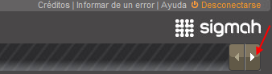
- El triángulo que apunta hacia la izquierda descubre las pestañas que se encuentran hacia la izquierda :

2.1.2. Cruz de las pestañas para cerrar las páginas
Todas las pestañas de páginas abiertas de esta forma, excepto la correspondiente al panel de control, cuentan con un símbolo en forma de X que permite cerrar la página haciendo clic en dicho símbolo.
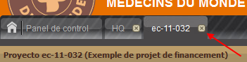
Esto significa que el único medio de cerrar el « Panel de control » consiste en cerrar la sesión haciendo clic en la palabra « Desconexión », en la parte superior derecha de la ventana del navegador.

2.1.3. Botones para reducir y desplegar
A la derecha del título de ciertas secciones de una página (ejemplos:
Advertencias, Proyectos relacionados, Filtros, Dimensiones) encontramos
un botón con un símbolo consistente en un corchete angular doble que
sirve para desplegar u ocultar el contenido de dichas secciones y dejar
así más o menos sitio a las demás secciones de la página.
Estos corchetes angulares dobles son de cuatro tipos, cada uno de los cuales tiene una función propia:
- Si el corchete angular doble apunta hacia la izquierda, significa que se puede ocultar la sección hacia la izquierda.

- Si el corchete angular doble apunta hacia la derecha, la sección se puede desplegar hacia la derecha.
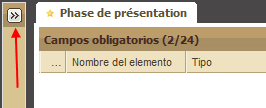
- Si el corchete angular doble apunta hacia abajo, la sección se puede ocultar hacia abajo.

- Si el corchete angular doble apunta hacia arriba, la sección se puede desplegar hacia arriba.

2.1.4. Botones con triángulo: mostrar/ocultar
En la sección « Detalles de la fase » de una fase de la pestaña “Panel de gestión” de una página de proyecto, el contenido está organizado en grupos. Estos grupos utilizan un sistema de cuadros que permite plegar y desplegar cada grupo con el fin de ocultarlo. Para ello, haga clic en el triángulo que apunta hacia arriba y el grupo correspondiente se pliega y permanece oculto.

Para desplegarlo de nuevo, basta con hacer clic en el triángulo, que ahora apunta hacia abajo.
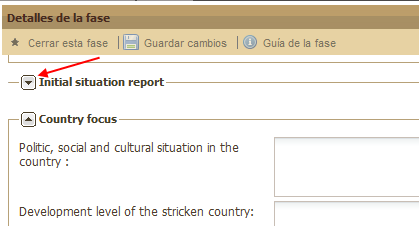
2.1.5. Personalizar las tablas
Todas las tablas utilizadas en Sigmah ofrecen la posibilidad de cambiar la organización en función del título de cada columna. Para ello, pase la flecha del ratón sobre el extremo izquierdo de cada título de columna. Verá cómo aparece un triángulo que apunta hacia abajo. Si hace clic en dicho triángulo, se desplegará una lista compuesta por tres elementos:

Funcionamiento de « Orden creciente » y « Orden decreciente »
« Orden creciente » y « Orden decreciente » sirven para los órdenes
alfabéticos y para las columnas compuestas de números (de 0 al
infinito).
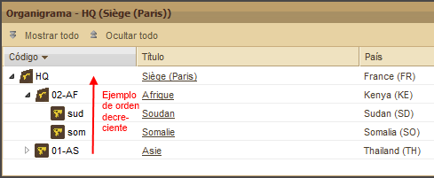
Funcionamiento de « Columnas »
Al pasar la flecha del ratón sobre el título Columnas, usted verá aparecer una nueva lista con casillas marcadas o no. Se trata del título de las columnas disponibles para la tabla en cuestión:
- un título precedido de una casilla marcada significa que la columna aparece en la tabla.
- un título precedido de una casilla no marcada significa que la columna permanece oculta.

Usted puede hacer aparecer u ocultar una columna con un simple clic en la casilla correspondiente a su título.

También se puede aumentar o reducir la anchura de las columnas pasando la flecha del ratón sobre el extremo derecho de cada columna. Entonces aparecen dos flechas (una apuntando hacia la izquierda y la otra hacia la derecha) separadas por dos líneas verticales. Manteniendo apretado el botón izquierdo del ratón, usted puede aumentar o disminuir tanto como quiera la anchura de la columna seleccionada.
2.1.6. Doble corchete angular sin recuadro: otros botones
Si la pantalla de su ordenador es de reducido tamaño o si usted decide reducir la ventana dedicada a Sigmah (gracias al botón  de su navegador web, por ejemplo) podría ocurrir que usted no tenga
sitio para mostrar todos los botones de la barra de herramientas. En ese
caso, aparece un Doble corchete angular sin recuadro
de su navegador web, por ejemplo) podría ocurrir que usted no tenga
sitio para mostrar todos los botones de la barra de herramientas. En ese
caso, aparece un Doble corchete angular sin recuadro  en el extremo derecho de la barra de herramientas que le permite
acceder a todos los botones que no pueden ser mostrados de la forma
habitual en la barra de herramientas.
en el extremo derecho de la barra de herramientas que le permite
acceder a todos los botones que no pueden ser mostrados de la forma
habitual en la barra de herramientas.

Al hacer clic en este icono, aparecen los botones desaparecidos de la barra de herramientas por falta de espacio. De esta forma, en el ejemplo precedente vemos que aparecen los siguientes botones:
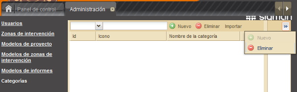
En vez de la pantalla siguiente:

2.2. Presentación de los principales iconos
Zona de intervención
 Proyecto propio
Proyecto propio
 Proyecto de financiamiento
Proyecto de financiamiento
 Proyecto de contraparte local
Proyecto de contraparte local
N.B.:
Para más información sobre lo que Sigmah define como « Tipo de proyecto », véase el apartado « Proyecto » del capítulo « Definiciones ».
Para más información sobre lo que Sigmah define como « Zona de intervención », véase « "Zona de intervención" ».
2.3. El código cromático
Código cromático de seguimiento de proyectos
Este código permite clasificar, distinguir y ver de forma clara y rápida el progreso de las actividades de un proyecto, además de las sumas invertidas y el tiempo transcurrido.
- El color marrón indica que la noción correspondiente se encuentra en curso de ejecución, sin ninguna incidencia en particular.
- El color naranja indica que la noción correspondiente se encuentra en curso de ejecución y se acerca al final sin ninguna incidencia digna de mención.
- El color rojo indica que la noción correspondiente se encuentra en curso de ejecución y próxima del final con un riesgo potencial asociado (variable según la noción, pero por lo general significa que lo realizado podría sobrepasar o ha sobrepasado las previsiones).
Código cromático para advertencias
También hay un código cromático para las advertencias de actividades
situadas a la izquierda del Panel de control y de los Paneles de gestión
de proyectos. Los colores, asociados al mismo icono de advertencia,
corresponden a tres informaciones diferentes, tal y como se indica a
continuación:
Pendientes:
-
 Hecho
Hecho -
 Por hacer
Por hacer -
 Retraso
Retraso
En espera:
-
 Cumplido
Cumplido -
 En espera
En espera -
 Retraso
Retraso
3. Definiciones
3.1. El « Modelo »
Para una mayor flexibilidad, Sigmah utiliza el concepto de Modelo para los siguientes conceptos:
- Proyecto
- Zona de intervención
- Informe
N.B.: Todos los proyectos están asociados a una zona de intervención según el siguiente esquema:

A efectos prácticos, un modelo de proyecto permite crear un número
indefinido de proyectos que piden la misma información, tienen el mismo
formato de marco lógico, el mismo número de fases, etc.
3.2. El « Proyecto »
En Sigmah, un proyecto es una entidad que reúne, como mínimo:
-
Una identificación:
- Título del proyecto
- Código del proyecto
-
Un periodo de tiempo:
- Fecha de comienzo
- Fecha de fin
- Un marco lógico
- Un presupuesto
- Una zona geográfica de intervención
- Un responsable de proyecto
- Una o varias fases de seguimiento
En función de las características de cada modelo, el proyecto puede
contener otras muchas informaciones: todas aquéllas que la organización
juzgue útil incluir en el seguimiento del proyecto.
En la práctica, cuando se habla de proyecto no se distingue
claramente entre la percepción que tiene la organización humanitaria del
proyecto, y las percepciones que podrían tener un proveedor de fondos o
una contraparte de operaciones. Con el fin de ganar en precisión,
especialmente en el caso de proyectos cofinanciados, ha resultado
necesario crear diferentes conceptos de proyecto.
Por eso, Sigmah ofrece tres tipos de proyectos:
- proyecto propio
- proyecto de financiamiento
- proyecto de contraparte local
Estos tres tipos de proyectos, pese a sus diferencias, responden a la misma definición de la noción de proyecto descrita más arriba.
3.2.1. Proyecto propio
El « proyecto propio » corresponde, de forma ideal, a un proyecto que
sólo depende de los procedimientos de la organización responsable de su
realización o, al menos, a un proyecto que no es percibido por dicha
organización ni como un proyecto de financiamiento ni como un proyecto
de colaboración local.
El proyecto propio responde a la visión y el seguimiento de la
información propios de la organización, tal y como es percibido por esta
última. Esto sirve para supervisar los informes internos sobre el
proyecto, el proceso de toma de decisiones sobre el comienzo de la
acción, los indicadores de seguimiento que la organización desea
supervisar de forma independiente, etc.
N.B.: Icono de proyecto propio
(Para más detalles, véase « Presentación de los principales iconos »)
3.2.2. Proyecto de financiamiento
El financiamiento corresponde a los recursos financieros de uno o
varios proyectos. Como la mayoría de los proyectos son financiados por
un proveedor de fondos, en la mayor parte de casos se trata, por lo
tanto, del proyecto tal y como lo percibe el proveedor de fondos.
Representa los recursos financieros desde su intención inicial hasta su
cierre, pasando por la fase de contrato propiamente dicha. Por lo tanto,
un financiamiento es percibido como un proceso que evoluciona a lo
largo de diferentes fases. Ciertos modelos de financiamiento pueden no
contar con ninguna fase, cuando no es necesario supervisar la evolución
de una demanda y el estado de la rendición de cuentas frente al
proveedor de fondos.
Un financiamiento va asociado a uno o varios proveedores de fondos.
Desde el momento en que los fondos y los procesos de solicitud de
financiamiento, seguimiento y comunicación funcionan de forma única y no
divergente, un co-financiamiento con varios proveedores de fondos será
considerado como un sólo financiamiento con varios proveedores de fondos
asociados. Si los informes sobre el financiamiento, los plazos del
proceso, o las sumas dispensadas deben ser gestionados de forma
independiente para cada proveedor de fondos, el co-financiamiento para
el proyecto será entonces gestionado a través de varios financiamientos.
De la misma forma que el proyecto, el financiamiento puede ser enmendado.
N.B.: icono del proyecto de financiamiento
(Para más detalles, véase "Presentación de los principales iconos")
3.2.3. Proyecto de contraparte local
El « proyecto de contraparte local » corresponde a la entidad proyecto tal y como es gestionada por un colaborador de operaciones del proyecto (por lo general, un colaborador local de la organización).
N.B.: icono del proyecto de contraparte local
(Para más detalles, véase "Presentación de los principales iconos")
3.3. La « Zona de intervención » (i.e.: Misión, Base, Desk, etc.)
Una zona de intervención se define como la proyección geográfica de una
organización humanitaria en determinado terreno de intervención. Por lo
general, las organizaciones humanitarias cuentan con más de una zona de
intervención. El conjunto de las zonas de intervención de una
organización corresponde a la estructura jerárquica de su actividad en
las zonas en crisis tal y como se refleja en su organigrama.
Los tipos de zona de intervención clásicos son la Sede, el Desk, la
Misión, la Base, etc. Por ejemplo, podríamos hablar de un Desk Asia, una
Misión en Pakistán, una Base en Bukavu, etc.
Así pues, Sigmah define el lugar geográfico (continente, país, región)
en el que se lleva a cabo el proyecto. De esta forma, las zonas de
intervención constituyen un árbol cuya raíz es la sede.
NB : icono de zona de intervención
(Para más detalles, véase "Presentación de los principales iconos")
3.4. El « Informe »
Sigmah define el informe como un formulario libre, cuya estructura es
decidida por la organización: el modelo. Cada modelo puede ser
modificado en el espacio « Administración » del software.
Los informes se pueden rellenar y/o consultar en las pestañas « Panel de gestión » e « Informes y documentos ».
(Para más detalles, véase "Presentación de los principales iconos")
3.5. Un « Documento »
Sigmah define el documento como un archivo adjunto. Se pueden adjuntar varias versiones sucesivas de un mismo documento conservando el orden cronológico de las diferentes versiones añadidas.
(Para más detalles, véase "¿Cómo adjuntar un documento?" y "Cómo adjuntar una nueva versión de un documento?)
3.6. Un « Indicador »
En Sigmah, un indicador es una variable cuyo valor puede ser medida a lo largo del tiempo y para varios lugares diferentes. Para cada proyecto, el utilizador puede crear sus propios indicadores, vinculándolos o no al marco lógico.
3.6.1. Tipos de indicador
Sigmah permite manejar 2 tipos de indicadores:
1. Indicadores cuantitativos:
Los valores obtenidos en los diferentes lugares a lo largo del tiempo
son siempre valores numéricos (ejemplo: « Número de kits NFI
distribuidos »)
2. Indicadores cualitativos:
Los valores obtenidos en los diferentes lugares a lo largo del tiempo
son valores comprendidos en una lista definida en el momento de la
creación del indicador (ejemplo: « Percepción global de la acción por
parte de los beneficiarios », con la siguiente lista inicial de valores:
Muy buena, Buena, Deficiente, Muy deficiente).
(Para más detalles, véase "¿Cómo crear un « indicador »?")
3.6.2. « Grupo de indicadores »
- Un grupo de indicadores puede contener tantos indicadores como se desee
- Un grupo de indicadores puede pertenecer a otro grupo de indicadores, pero sólo a uno
3.6.3. « Localización de recogida de valores de indicador »
- Un nombre [obligatorio]
- Una línea: la carretera o el río más próximo si el nombre del lugar no es reconocido de forma general
- Coordenadas geográficas
- En función del país en el que se sitúa el proyecto, una pertenencia a una o varias divisiones administrativas locales
3.6.4. « Fuente de datos » de un indicador
- pueden provenir de una recopilación específica de datos en el terreno;
- pueden proceder de uno o varios indicadores de otros proyectos;
- y, a veces, pueden combinar ambos tipos de fuente.
| Proyecto | Indicador | Fuentes de datos |
| Proyecto propio PP | rend-u, « rendimiento medio UNICEF », lleva el seguimiento de todos los pozos financiados por UNICEF | Recopilación específica de campo |
| Proyecto propio PP | rend-o, « rendimiento medio otros », lleva el seguimiento de todos los demás pozos | Recopilación específica de campo |
| Proyecto UNICEF PU | flow-rate, « Wells’ average rate of flow » | PP.rend-u (el indicador rend-u del proyecto propio PP) |
| Proyecto ECHO PE | rend, « rendimiento medio de los pozos » |
|
3.7. Una « Categoría »
Las categorías son las características propias de cada proyecto, que lo definen en función de criterios seleccionados. Pueden ser de diferente naturaleza, definidas durante la configuración de los parámetros (con un sistema de "etiquetas") al elegir entre los 6 iconos y 40 colores disponibles.
Ejemplo de categorías utilizadas para definir un tipo de crisis:

(Para más detalles, véase "Gestión de las categorías")
3.8. La « Enmienda »
Las páginas “proyecto” permiten crear y visualizar las eventuales
enmiendas realizadas por la organización en un proyecto dado.
La enmienda es una versión del proyecto. Corresponde, por
ejemplo, a una modificación de la lógica de intervención del proyecto
(y, por lo tanto, a una modificación del marco lógico), o a una
renegociación de la fecha de finalización de proyecto o de su
presupuesto o de ambas de forma simultánea.
La enmienda puede ser supervisada de forma independiente para el
proyecto y sus proyectos relacionados (fuentes de financiación o
proyectos financiados).
Uno de los objetivos del seguimiento de las enmiendas es el de
poder archivar ciertas características del proyecto, para guardar las
huellas de la evolución de las principales características del mismo.
Por defecto, el marco lógico y su presupuesto se encuentran entre las
informaciones archivadas de forma independiente para cada enmienda. Por
otra parte, para cada modelo de proyecto, el administrador del sistema
puede elegir qué otras informaciones se archivarán con cada nueva
enmienda.
La fecha y hora de creación de la enmienda son conservadas en el
sistema, de forma que se puedan aislar los valores de los indicadores
obtenidos durante el tiempo comprendido por la enmienda.
(Para más detalles, véase "¿Cómo hacer una enmienda de proyecto?")
4. Pantallas de usuario
4.1. Panel de control
El « Panel de control » constituye la página de inicio del software
Sigmah. Por esta razón, siempre permanece abierto durante una sesión,
disponible como primera pestaña (situada a la izquierda), cualquiera que
sea el número de páginas que se abran posteriormente. El único medio de
cerrar el « Panel de control » es el de cerrar la sesión haciendo clic
en la palabra « Desconexión », en la parte superior derecha de la
pantalla.
El « Panel de control » se divide en 5 secciones:
- Lista de advertencias sobre actividades « Por hacer »
- Lista de advertencias sobre actividades « Pendientes »
- Menú: compuesto por 2 rúbricas (Nuevo proyecto, Administración)
- Zona de intervención
- Proyectos
N.B.: Al hacer clic en una zona de intervención o un proyecto,
usted puede abrir una nueva pantalla cuya pestaña aparecerá a la derecha
de la pestaña del « Panel de control ».
4.1.1. Lista de advertencias
Las tablas llamadas « Por hacer » y « Pendientes » situadas a la
izquierda del Panel de control presentan el conjunto de los elementos
creados para cada proyecto.
Pueden ordenarse por orden alfabético creciente o decreciente del
título (con un simple clic en el título de la columna « Nombre ») y por
orden creciente o decreciente de la fecha prevista (con un simple clic
en el título de la columna « Fecha prevista »).
Para más detalles sobre la creación de nuevas actividades por hacer, véase « Tabla de advertencias ».
Para más detalles sobre los códigos cromáticos, véase « Código cromático para advertencias ».
4.1.2. Menú
Para más detalles sobre el botón « Nuevo proyecto », véase « ¿Cómo crear un proyecto en el Panel de control? ».
Para más detalles sobre el botón « Administración », véase « Administración ».
4.1.3. Panel de zonas de intervención
Situado en el centro de la parte superior del Panel de control, el
panel de zonas de intervención muestra de forma completa y más o menos
detallada la totalidad de las zonas de intervención, organizadas según
el tipo de utilización y visualización que se quiera adoptar y según el
nivel de sub-carpetas elegido por el usuario.

El panel de zonas de intervención aparece con las carpetas cerradas por
defecto, lo que quiere decir que las eventuales sub-carpetas no
aparecen en pantalla.
Abrir/cerrar una carpeta que contiene sub-carpetas
Una carpeta contiene una o varias sub-carpetas cuando su icono viene
precedido de un triángulo horizontal de color gris claro. En tal caso,
un clic en dicho triángulo permite abrir el dossier y mostrar dichas
sub-carpetas.
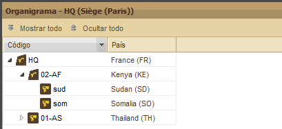
Al abrir el triángulo, éste se vuelve negro y apunta hacia abajo. Para
ocultar de nuevo las sub-carpetas, haga otra vez clic en el triángulo
para que se vuelva gris y se coloque de forma horizontal.
De la misma forma, si una sub-carpeta viene precedida de un triángulo
gris claro en posición horizontal, ello significa que también contiene
otras sub-carpetas. El procedimiento para mostrarlas y ocultarlas es el
mismo que el ya expuesto.
En caso de que un icono de zona de intervención no venga precedido de
ningún triángulo, ello quiere decir que dicha zona no contiene ninguna
sub-carpeta.
Mostrar/ocultar el contenido de todas las zonas de intervención
Para ganar tiempo, se pueden abrir de una sola vez todas las carpetas y
sub-carpetas del panel de las zonas de intervención. Para ello, basta
con hacer clic en el botón « Mostrar todo » situado bajo el título del
panel.

Entonces aparecen todas las carpetas y subcarpetas existentes:

Para ocultar el contenido de todas las carpetas y sub-carpetas
existentes, haga clic en el botón « Ocultar todo » situado a la derecha
del botón precedente.
Ordenar las zonas de intervención
Para más detalles, véase « Ordenar las zonas de intervención ».
4.1.4. Panel de proyectos
Por defecto, este panel de proyectos (idéntico al ofrecido en la parte baja de las páginas de zonas de intervención) se compone de 8 columnas:
- código,
- nombre,
- fase activa,
- zona de intervención,
- sumas gastadas,
- tiempo,
- actividades,
- categoría.
El contenido de las cuatro primeras columnas (código, nombre, fase
activa, zona de intervención) se presentan en un formato escrito, las de
las tres siguientes (sumas gastadas, tiempo, actividades) en forma de
diagrama y las de la última columna (categoría) en forma de icono.
Actualizar la información del panel de proyectos
El conjunto de modificaciones que usted u otro usuario hace a los
diferentes proyectos y zonas de intervención no son guardadas de forma
constante y automática en el Panel de control y sus diferentes
secciones, especialmente el panel de proyectos.
Además, para obtener la última versión actualizada de las informaciones
guardadas desde la última utilización de su Panel de control, haga clic
en el botón « Actualizar la lista de proyectos » que se encuentra bajo
el título del panel.

Entonces aparecerá una barra de carga que le indicará la progresión del proceso de actualización:
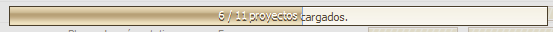
N.B.: El botón « Actualizar la lista de proyectos » no existe en el panel de proyectos disponible en la página Panorama de las zonas de intervención. Para actualizar este panel, existen 2 posibilidades:
- abandonar la página y volver a abrirla
- o pulsar la tecla F5 del teclado.
Reagrupación de los proyectos por tipo
Por defecto, la lista de proyectos se establece por « Proyecto propio
». En tal caso, los proyectos relacionados con cada Proyecto propio se
encuentran ordenados por Proyecto de financiamiento y Proyecto de
contraparte local.
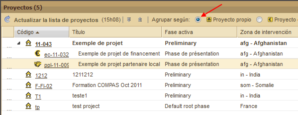
Al hacer clic en « Proyecto de financiamiento », la lista de proyectos
se reorganiza: ahora, los proyectos relacionados con cada Proyecto de
financiamiento se encuentran agrupados por Proyectos propios y Proyectos
de contraparte local.

Al hacer clic en « Proyecto de contraparte local », la lista de
proyectos se reorganiza: ahora, los proyectos relacionados con cada
Proyecto de contraparte local se encuentran agrupados por Proyectos
propios y Proyectos de financiamiento.

Mostrar/Ocultar los proyectos relacionados
Haciendo clic en el triángulo negro que apunta hacia abajo a lo
derecha, en la columna Código, se puede cerrar el grupo de cada
proyecto:
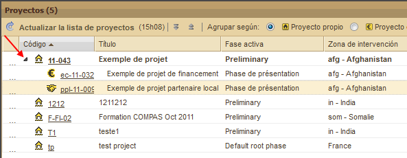
El triángulo se vuelve gris y se coloca en posición horizontal.
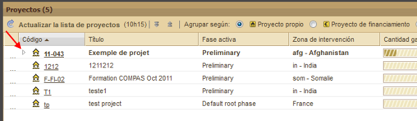
Mostrar/ocultar todos los proyectos relacionados
Para ganar tiempo, se pueden abrir de una vez todos los proyectos
(según el tipo seleccionado) contenidos en el panel de proyectos. Para
ello, haga clic en el botón « Mostrar todo » que se encuentra debajo del
título del panel, a la derecha del botón « Actualizar la lista de
proyectos »:

Entonces aparecerán también todos los proyectos relacionados a los elegidos como criterio de organización del panel:
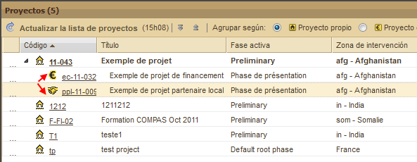
Para ocultar todos los proyectos relacionados y mostrar solamente los
proyectos elegidos como criterio de organización del panel, haga clic en
el botón « Ocultar todo », a la derecha del botón precedente.
Marcar un proyecto como favorito
En el panel de proyectos, la primera columna de la izquierda está
destinada a un sistema de estrellas que permite marcar un proyecto en
concreto como favorito.
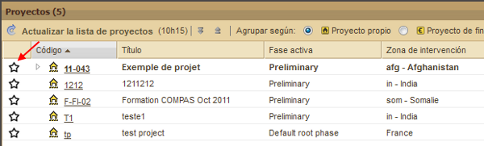
Para activar esta función, haga clic en la estrella gris que aparece por defecto. En ese mismo momento, la estrella se vuelve de color amarillo.
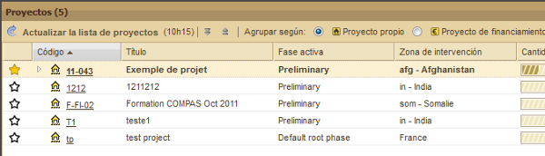
También aparece un mensaje de confirmación a la derecha de la parte baja de la pantalla.
4.2. Zona de intervención
Se puede acceder a las zonas de intervención haciendo clic directamente
en el panel de zonas de intervención del Panel de control.
Todas las páginas relacionadas con las zonas de intervención tienen una
banda en la parte superior en la que se pueden ver el código y el
nombre de la zona de intervención además de otras informaciones
definidas durante la configuración de los parámetros.
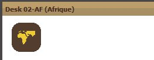
Las páginas que tratan sobre la zona de intervención son de 4 tipos diferentes:
Se puede cambiar directamente de una a otra página gracias a un sistema de sub-pestañas que se encuentran bajo las informaciones generales de la zona de intervención:
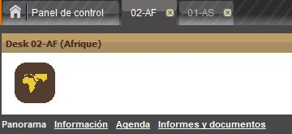
4.2.1. Panorama
La página Panorama contiene dos tablas:
- En la parte superior, una tabla llamada « Organigrama », compuesta de 3 columnas por defecto: código, título, país. Si el código de una línea viene precedido de un triángulo, esto quiere decir que se divide en varios sub-códigos, cada uno de los cuales corresponde a una base. Para mostrar estos sub-códigos, haga clic en el triángulo y, para ocultarlos, haga clic por segunda vez en el mismo triángulo.
- En la parte inferior, una tabla llamada « Proyectos » compuesta de 8 columnas por defecto: código, nombre, fase activa, zona de intervención, sumas gastadas, tiempo, actividades (los tres últimos vienen presentados en forma de barras indicadoras de nivel: para más detalles, véase « Códigos cromáticos »), categoría (en forma de iconos).
Para más detalles sobre el Panel « Proyectos », véase « Panel de proyectos » en el capítulo Panel de control.
Ordenar las zonas de intervención
Al pasar la flecha del ratón sobre el extremo derecho del título de
cada columna, aparece un triángulo que apunta hacia abajo y en el que se
puede hacer clic. Entonces se despliega un menú compuesto por tres
elementos: Orden creciente, Orden decreciente y Columnas.
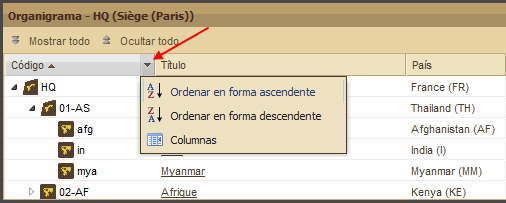
« Orden creciente » y « Orden decreciente » no sólo funcionan con
letras (orden alfabético) sino también con números (entre 0 e infinito).
Al pasar la flecha del ratón sobre el título Columnas, se desplegará un
nuevo menú con casillas marcadas o no. Se trata del título de las
diferentes columnas disponibles en la tabla: un título precedido por una
casilla marcada significa que la columna correspondiente aparece en la
tabla, y un título precedido de una casilla sin marcar quiere decir que
la columna correspondiente permanece oculta. Usted puede conectar o
desconectar una columna con un simple clic en la casilla
correspondiente.
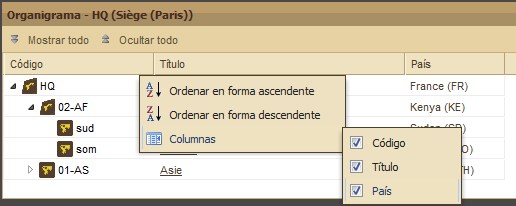
N. B.: Ambas tablas son las mismas que las que encontramos en el Panel de control.
4.2.2. Informaciones
La página Informaciones contiene todas las informaciones del modelo de zona de intervención correspondiente. En ella se pueden encontrar las casillas que permiten asignar a la zona de intervención un código, un nombre y otras características fundamentales.
4.2.3. Agenda
La página Agenda se divide en dos partes:
1. A la izquierda, la lista de agendas. Se pueden ocultar ciertas agendas para aumentar el espacio disponible para las demás agendas en el calendario (para más detalles, véase « Botones para reducir y desplegar »). También se pueden ordenar las agendas por orden creciente o decreciente, así como elegir las rúbricas que queremos mostrar y ocultar marcando o no los títulos del menú segundario que se despliega cuando pasamos la flecha del ratón sobre el apartado « Columnas ».
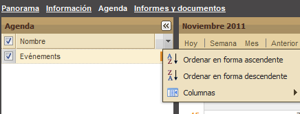
2. A la derecha, el calendario que puede presentarse de 3 formas diferentes:
- por día,
- por semana y
- por mes.
La presentación por defecto del calendario nos muestra el mes en curso.
La fecha de cada día viene escrita en gris oscuro. Cada línea viene
precedida de un número de color naranja que corresponde al número de la
semana en relación al año en curso.
Los botones « Anterior » y « Siguiente » permiten acceder, según la
presentación utilizada, a la semana o al mes precedente o posterior.
También se puede añadir un acontecimiento haciendo clic en la última
pestaña del calendario, llamada « Añadir un acontecimiento ».

En tal caso, aparecerá la siguiente ventana:

Después de rellenar los diferentes campos y hacer clic en OK, el acontecimiento aparece en el panel « Agenda ».
N. B.: Para fijar todo el día para una actividad o acontecimiento, deje la hora de inicio y de final en blanco.
4.2.4. Informes y documentos
Véase « Informes y documentos » en la capítulo « Proyecto ».
4.3. Proyecto
4.3.1. Panel de gestión
El panel de gestión se compone de tres tablas:
- la tabla de advertencias
- la tabla de fases
- la tabla de proyectos relacionados (no confundir con la tabla de proyectos del Panel de control o de la página Panorama)
4.3.1.1. La tabla de advertencias
Esta tabla se compone de dos partes: actividades por hacer y actividades en espera. Ambas partes incluyen 4 columnas por defecto:
- ¿Cerrar ?,
- Título
- Fecha prevista
- Fecha OK.
Por otro lado, ambas partes ofrecen la posibilidad de:
- Añadir una actividad, haciendo clic en el botón « Añadir ». En tal caso, se abre la siguiente ventana:

- Filtrar las actividades respecto a su estado: Terminado, En curso, Con retraso. Para ello, haga clic en el botón « Filtrar » y se desplegará el siguiente menú:
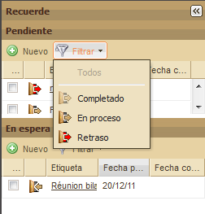
Hecho esto, sólo aparecerán en pantalla las actividades cuyo estado corresponde con el elegido como filtro.
Por otra parte, estas tablas utilizan un código cromático: el color
negro es el color normal y el rojo el color de las actividades con
retraso.
4.3.1.2. La tabla de fases
La tabla de fases utiliza los elementos definidos durante la configuración de los parámetros. Por ejemplo, si el modelo elegido es el del método de aseguramiento de la calidad COMPAS Calidad, desarrollado por Groupe URD, el modelo se compondrá de 5 fases:
- fase preliminar
- fase de diagnóstico
- fase de concepción
- fase de realización y de seguimiento
- fase de final de proyecto
Cada fase del ciclo de proyectos forma un grupo, para cada uno de los cuales existe una serie de campos que hay que rellenar.
En el caso del modelo basado en el COMPAS Calidad, cada pregunta clave
está relacionada con uno de los doce criterios de su sistema de
referencia de la Calidad (« La Rosa de los vientos »).
Se puede acceder a cada una de las fases por medio de un sistema de pestañas dotado de un código cromático:
- gris claro: la pestaña se encuentra en curso de utilización (por defecto, la pestaña activa es la de la izquierda, correspondiente a la fase preliminar).
- gris medio: se puede acceder a la pestaña (la fase está abierta y, por lo tanto, se puede hacer clic en ella)
- gris oscuro: no se puede acceder a la pestaña (la fase aún no ha sido abierta y, por lo tanto, aún no se puede hacer clic en ella)
Para completar cada fase, es necesario seguir los siguientes pasos:
- O bien abrir la fase siguiente haciendo clic en el botón « Activar esta fase » (atención: en caso de que una fase anterior se encuentre abierta, hay que completar todos los campos obligatorios y guardarlos para poder activar la siguiente fase).
- O bien cerrar directamente la fase haciendo clic en el botón « Cerrar esta fase » (atención: hay que completar y guardar todos los campos obligatorios de la fase correspondiente antes de cerrarla).
Cada pestaña de fase permite acceder a una tabla que se divide en dos partes:
- a la izquierda, « Campos obligatorios »
- a la derecha, « Detalles de la fase »
Campos obligatorios
En los « Campos obligatorios » aparecen los campos a los que habrá que
responder en los « Detalles de la fase » además del estado de respuesta
de la pregunta (una señal roja para los campos no respondidos o verde
para los campos completados) y el tipo de respuesta posible (campo de
texto, elección múltiple, casilla de verificación).
Detalles de la fase
La parte « Detalles de la fase » puede contener diferentes apartados en función de la configuración de los parámetros.
Haciendo clic con el botón derecho del ratón en uno de los campos, se puede acceder al historial de respuestas.

N. B.: Cuando se deja la flecha del ratón sobre un campo determinado, se abre una ventana de información con el vínculo del criterio del sistema de referencia de la calidad adoptado (como el del COMPAS Calidad, por ejemplo).
Al hacer clic en « Ver el historial » aparece la lista de las modificaciones realizadas a la respuesta correspondiente, como en el siguiente ejemplo:
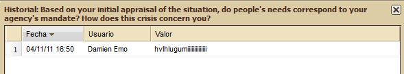
Se recomienda hacer clic frecuentemente en el botón « Guardar las modificaciones » durante la redacción de las respuestas para reducir los riesgos de pérdida de datos, especialmente en el caso de una conexión a Internet de calidad modesta.
Guía de la fase
El botón « Guía de la fase », a la derecha del título « Detalles de la
fase » permite acceder a uno o varios complementos de documentación para
ayudar a redactar el informe correspondiente. Dicha documentación se
integra en Sigmah durante la configuración de los parámetros. (Para más
detalles, véase « ¿Cómo crear un modelo de proyecto? »).

N. B.: Al hacer clic en Informe, en el Panel de gestión, podemos ir directamente a la pestaña "Informes y Documentos".
4.3.1.3. La tabla de proyectos relacionados
La tabla de proyectos relacionados se divide en dos partes:
- A la derecha, las « Fuentes de financiación »: aquello que proporciona los fondos para financiar el proyecto en cuestión.

- A la izquierda, los « Proyectos financiados »: aquello que el proyecto en cuestión financia.
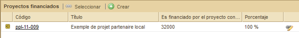
1. « Fuentes de financiación »
Para crear un vínculo entre un proyecto ya existente abierto y un proyecto de financiamiento, existen dos posibilidades:
- crear un nuevo proyecto (véase el apartado « ¿Cómo crear un proyecto en una página de Proyecto? »),
- seleccionar un proyecto existente
Para seleccionar un proyecto existente, haga clic en el botón « Seleccionar »:

Una vez completadas las informaciones requeridas, haga clic en OK y aparecerá entonces el siguiente mensaje de confirmación.
2. « Proyectos financiados »
Para crear un vínculo entre un proyecto ya existente en estado activo y un proyecto financiado, existen dos posibilidades:
- crear un nuevo proyecto (véase el apartado « ¿Cómo crear un proyecto en una página de Proyecto? »),
- seleccionar un proyecto existente
Para seleccionar un proyecto existente, haga clic en el botón « Seleccionar »:

Una vez completadas las informaciones requeridas, haga clic en OK y aparecerá entonces el siguiente mensaje de confirmación.
4.3.2. Detalles
En función del modelo de proyecto, esta página ofrece las informaciones del proyecto independientes respecto de las fases.
4.3.3. Marco lógico
La pestaña « Marco lógico » permite definir o actualizar el marco
lógico de un proyecto. El marco lógico es una tabla en que las líneas
representan los objetivos específicos, los resultados previstos, las
actividades o las condiciones previas. En Sigmah, ciertos modelos de
proyecto permiten la utilización, en el marco lógico, de grupos de
elementos (grupos de objetivos específicos, de resultados previstos, de
actividades o de condiciones previas).
Concretamente, la pestaña « Marco lógico » ofrece la posibilidad de realizar las siguientes acciones en el marco lógico:
- Modificar el objetivo general
- Modificar el contenido de una línea
- Añadir líneas
- Desplazar las líneas
- Copiar y pegar un marco lógico entero
- Eliminar una línea
- Añadir grupos
- Cambiar el nombre de los grupos
- Eliminar grupos
N.B.: Para conservar las modificaciones efectuadas en el marco lógico hay que hacer clic en « Guardar ».
Modificar el objetivo general
El objetivo principal se encuentra en lo alto del marco lógico. Para
modificarlo, basta con situar el cursor en el campo del objetivo general
y escribir el título deseado.

Modificar el contenido de una línea
Cada línea de la tabla contiene 3 tipos de información:
- Lógica de intervención: se trata, en cierto sentido, del título de la línea (título del objetivo, del resultado, de la actividad, etc.)
- Indicadores y fuentes de verificación: se trata de los indicadores, la expresión cuantitativa de los objetivos y sus fuentes de verificación, definidas para cada línea.
- Riesgos e Hipótesis: informaciones complementarias que expresan las condiciones bajo las que el objetivo o el resultado pueden ser alcanzados, y los riesgos que pueden obstaculizarlos.
Para añadir líneas, haga clic a la izquierda de la línea, en el vínculo « Añadir » (subrayado), que se encuentra justo debajo del título de la línea. Véase a continuación el ejemplo de la línea « Objetivos específicos »:
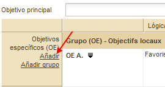
Si el modelo elegido utiliza grupos para los objetivos específicos, la ventana que se abre presenta el siguiente aspecto:
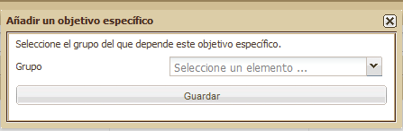
Una vez elegido uno de los grupos que aparecen en la lista, haga clic en OK y aparecerá el nuevo objetivo específico señalado con la letra que sigue a la del objetivo precedente (por defecto) y seguido del nombre dado a dicho objetivo, si tal es el caso:

N.B.: Las actividades del marco lógico aparecen automáticamente en la agenda.
Desplazar líneas
Desde el momento en que su marco lógico posee más de un objetivo
específico (resultado previsto, actividad o condición previa), el orden
de las diferentes líneas puede organizarse de la forma deseada haciendo
clic con el botón derecho del ratón en la que le interese desplazar. En
ese caso, el programa le ofrece la posibilidad de subirla, bajarla o
suprimirla del marco lógico:
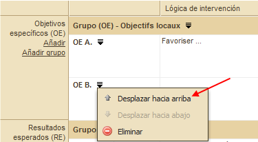
Copiar y pegar un marco lógico
Para evitar tener que escribir de nuevo la totalidad de un marco lógico parecido a una versión precedente, Sigmah permite copiar la totalidad de un marco lógico y pegarlo en un marco lógico creado recientemente.
Véase « ¿Cómo copiar y pegar un marco lógico? ».
Eliminar una línea
Para eliminar una línea, haga clic en el título genérico (Grupo OE,
Grupo RE, Grupo A, Grupo CP, o OE, RE, A, CP) y aparecerá el botón «
Eliminar »:
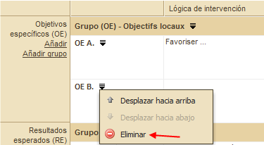
Añadir grupos
Para añadir un grupo, haga clic en el vínculo « Añadir un grupo »
(subrayado), situado en la parte baja, a la izquierda de la línea. Véase
a continuación el ejemplo de la línea « Objetivos específicos »:

Aparecerá entonces la siguiente ventana:

Tras escribir el nombre que usted desea dar a su grupo, haga clic en « OK ».
A partir de ese momento su grupo es creado y aparecerá en el marco lógico.

Cambiar el nombre de los grupos
Para cambiar el nombre de un grupo, haga clic en el título genérico
(Grupo O.S., Grupo R.A., Grupo A., Grupo C.P.) y se abrirá un menú en el
que encontrará el botón « Cambiar de nombre »:
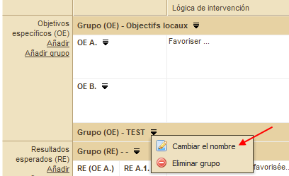
Cuando hacemos clic en el botón « Cambiar de nombre », aparece la siguiente ventana:
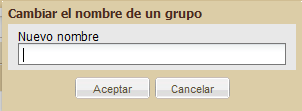
Escriba el nombre escogido y haga clic en OK. A partir de ese momento el grupo aparece en el marco lógico con el nuevo nombre.
Eliminar grupos
Para eliminar un grupo, haga clic en el título genérico (Grupo O.S.,
Grupo R.A., Grupo A., Grupo C.P.) y se abrirá un menú en el que
encontrará el botón « Eliminar »:
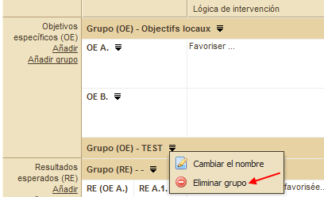
Al hacer clic en el botón « Eliminar », el grupo desaparece.
4.3.4. Gestión de indicadores
N.B.: Antes de cerrar la página, no olvide hacer clic en « Guardar »
La pestaña de Gestión de indicadores permite realizar las siguientes operaciones:
- Definir indicadores
-
Crear y cambiar el nombre de los grupos de indicadores
-
Organización de indicadores y de grupos de indicadores
-
Definir lugares de recogida de valores de indicador
- Mostrar los lugares de recopilación de datos para un indicador
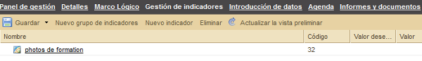
Definir indicadores
Para crear un indicacor, haga clic en el botón « Nuevo indicador ». Si usted ha seleccionado la línea de determinado grupo de indicadores en la tabla, el indicador que se creará al hacer clic en « Nuevo indicador » pertenecerá automáticamente a este grupo (usted podrá desplazarlo más tarde).
- Si el indicador aún no ha sido creado, seleccione el grupo en el que quiere usted meterlo y haga clic en el botón « Nuevo indicador ». Entonces se creará el indicador en el grupo seleccionado.
- Abrir el formulario de modificación del indicador haciendo clic en el vínculo bajo el nombre de éste, modificar el grupo del indicador, y hacer clic en « Guardar ».

- « Arrastrar » el indicador: haga clic con el botón izquierdo del ratón en la línea del indicador que se quiere desplazar y, sin soltar el botón, desplazar el cursor del ratón hasta el grupo en el que se desea introducir el indicador en cuestión. Por último, suelte el botón.
- Si el grupo aún no ha sido creado, seleccione el grupo en el que usted quiere colocar el grupo que va a crear y haga clic en el botón « Nuevo grupo ». Entonces se creará el nuevo grupo dentro del grupo seleccionado.
- « Arrastrar » el grupo: haga clic con el botón izquierdo del ratón en la línea de la tabla correspondiente al grupo que desea desplazar y, sin soltar el botón, desplace el cursor del ratón hasta el grupo en el que quiere introducir el grupo seleccionado. Por último, suelte el botón.
Definir lugares de recogida de valores
La definición de lugares de recogida de valores de indicador se hace en
la pestaña « Lugares » que se encuentra a la derecha de la página.
- Para definir un lugar de recogida de valores de indicador, haga clic en « Nuevo lugar de intervención » (para más detalles sobre la creación de lugares de recogida de valores de indicador, véase « ¿Cómo crear un lugar de recogida de valores de indicador? »)
- Para modificar un lugar de recogida de valores de indicador, haga clic en el nombre del lugar en cuestión y después en el botón « Modificar »
- Para eliminar un lugar de recogida de valores de indicador, haga clic en el nombre del lugar en cuestión y después en el botón « Suprimir »
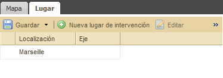
4.3.5. Entrar valores de indicador
La pestaña Entrar indicadores permite realizar 2 operaciones:
- Entrar o consultar los valores obtenidos para cada indicador
- Consultar o modificar la definición de los indicadores
Manipulación del panel
Existen 3 tipos de vistas para manipular los valores de los indicadores en esta página:
- La vista por lugar: presenta una tabla de los valores obtenidos para todos los indicadores (que forman las líneas de la tabla) y en cada mes (una columna para cada mes) en un lugar determinado.
- La vista por indicador: presenta una tabla con los valores de un indicador determinado obtenidos en todos los lugares de recogida (que forman las líneas) para cada mes (con una columna para cada mes)
- La vista por mes: presenta los valores de todos los valores de todos los indicadores obtenidos en todos los lugares de recogida durante un mes determinado.
La elección de tener los indicadores en columnas y los lugares en
líneas, o a la inversa, puede cambiarse con el botón que representa dos
flechas opuestas, que se encuentra en la esquina superior izquierda de
la tabla ( ).
).
Para cambiar de vista, existen 3 posibilidades:
1. Los botones con una lupa ( ):
asociados a cada cabecera de la tabla (Lugar, Indicador o Mes),
permiten cambiar de vista tomando como referencia el lugar, el indicador
o el mes deseados.
):
asociados a cada cabecera de la tabla (Lugar, Indicador o Mes),
permiten cambiar de vista tomando como referencia el lugar, el indicador
o el mes deseados.
Ejemplo: Si hacemos clic en el botón de la lupa que se encuentra junto un título de indicador « Número de kits NFI distribuidos », la vista de la tabla cambia para mostrarnos una tabla sobre el indicador « Número de kits NFI distribuidos ».
2. Las listas desplegables de filtro: situadas justo encima de la tabla, las 3 listas desplegables de filtro « Lugar », « Indicador » y « Valor de indicador en », permiten cambiar de vista, mostrando respectivamente una tabla de valores para el lugar, el indicador o el mes seleccionado.
3. Los botones « vista anterior » ( ) y « vista siguiente » (
) y « vista siguiente » ( ): ello permite moverse entre las vistas que se han utilizado recientemente.
): ello permite moverse entre las vistas que se han utilizado recientemente.
La vista por defecto es la vista que aparece al abrir la pestaña « Entrar indicadores ».
La casilla « Vista por defecto » permite saber si la vista en curso es la vista por defecto y, eventualmente, cambiarla:
- Si la casilla « Vista por defecto » está marcada: la vista que aparece en pantalla es la vista por defecto.
- Si la casilla « Vista por defecto » no está marcada: la vista que aparece en pantalla no es la vista por defecto, pero si marcamos la casilla, cambia a la vista por defecto.
Entrar un valor de indicador
Para entrar un valor de indicador en el sistema:
- elija una vista apropiada para acceder al valor que hay que entrar;
- haga clic en la casilla de la tabla que quiera modificar;
- escriba el valor en cuestión y apriete la tecla « Enter » al terminar;
- haga clic en el botón « Guardar », que se encuentra en lo alto de la pantalla para guardar los datos.
Consulta o modificación de la definición de indicadores
Para consultar o modificar la definición de un indicador, haga clic en el botón con un lápiz ( )
que se encuentra, en la tabla, junto al nombre del indicador. Esta
acción abrirá la ficha del indicador en cuestión (para más detalles,
véase « Definición de indicadores »).
)
que se encuentra, en la tabla, junto al nombre del indicador. Esta
acción abrirá la ficha del indicador en cuestión (para más detalles,
véase « Definición de indicadores »).
4.3.6. Agenda
La página Agenda se divide en dos partes:
1. A la izquierda, la agenda propiamente dicha, que se puede ocultar para dejar más espacio al calendario (para más detalles, véase « Botones para reducir y desplegar »). También se pueden seleccionar los apartados que se desee mostrar u ocultar, activando o desactivando los títulos de la lista de la agenda.
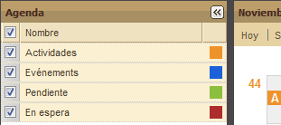
2. A la derecha, el calendario, que puede presentarse de 3 formas diferentes: hoy, semana y mes. El calendario muestra por defecto el mes en curso. La fecha de cada día aparece escrita en gris oscuro. Cada línea viene precedida de un número de color naranja que corresponde a la semana del año correspondiente. Las pestañas « Anterior » y « Siguiente » permiten mostrar la semana o el mes anterior o siguiente. También se puede añadir un acontecimiento haciendo clic en la última pestaña del calendario, llamada « Añadir un acontecimiento ».
En ese caso aparecerá la siguiente ventana:
Rellene los campos indicados y haga clic en OK. A partir de ese momento, el acontecimiento aparece en el panel « Agenda ».
En este panel encontramos también las actividades indicadas en el marco lógico.
4.3.7. Informes y documentos
La pestaña « Informes y Documentos » ofrece la posibilidad de realizar dos acciones:
- Redactar un informe según un modelo definido durante la configuración de los parámetros
- Insertar un documento informático guardado en su ordenador
N.B.: Los informes y los documentos adjuntos aparecen en la misma
tabla pero pueden distinguirse gracias a iconos diferentes para ambos
tipos:
-
 informes
informes -
 documentos adjuntos
documentos adjuntos
4.3.7.1. Redactar un informe
Crear un informe
Para crear un informe, haga clic en el botón « Nuevo informe », en la parte derecha de la ventana:

En ese momento, aparece una lista de tipos de informe disponibles para el proyecto en cuestión, clasificados por fases:

Seleccione la fase adecuada haciendo clic en el título
correspondiente y se abrirá una ventana. Escriba el título del informe y
haga clic en OK para aceptar.

Entonces verá aparecer:
1. un mensaje de confirmación en la parte baja de la pantalla
2. en la parte derecha de la ventana, la estructura
del informe, tal y como fue definida durante la configuración de los
parámetros.

Abrir un informe ya existente
Para mostrar en la parte derecha de la página el contenido del informe que le interesa, haga clic en el título del mismo, en la tabla de la izquierda:

Hecho esto, el contenido del informe elegido aparece en la parte derecha de la página, con su título como título de la ventana:
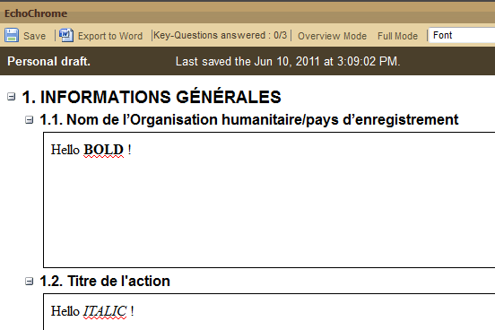
Mostrar en modo esquema o en modo completo
El informe se abre por defecto en modo completo, es decir, según un formato que presenta todos los apartados (campos del modelo), con sus preguntas y respuestas de forma íntegra. Se puede variar el tamaño de cada capítulo y apartado haciendo clic en los botones – para ocultar su contenido (o + para mostrarlo de nuevo).

También se puede poner el informe en modo esquema, que muestra el informe de la forma más condensada posible, esto es, con el contenido de todos los apartados ocultos, mostrando solamente los títulos de los diferentes capítulos y apartados.

Exportar un informe
Para exportar un informe, seleccione el informe en cuestión en la tabla de la izquierda « Informes y Documentos » y haga clic en el botón « Exportar Word » que se encuentra bajo el título de la tabla de la derecha, cuyo título corresponde al informe seleccionado.

Una vez hecho esto, aparecerá una ventana para guardar el archivo en su ordenador:
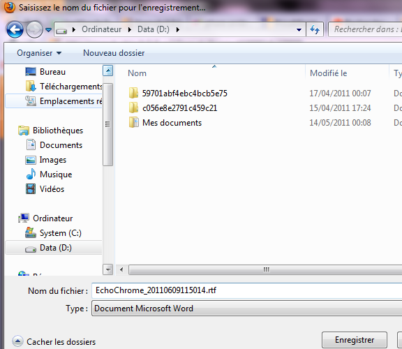
Cuando haya seleccionado la carpeta donde quiere guardar el archivo, haga clic en Guardar. Una vez que la descarga haya terminado, el archivo se encontrará disponible en dicha carpeta en formato .rtf.
4.3.7.2. Documentos adjuntos
Adjuntar un archivo
Para adjuntar un documento, haga clic en el botón « Añadir un archivo ».
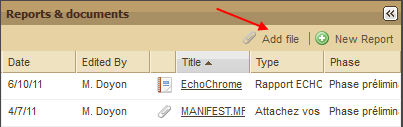
Al hacer esto, se abre un menú con todos los tipos de documentos que
se pueden adjuntar al proyecto, organizados por página (fases o pestaña
« Detalles »):

Elija el tipo de documento más adecuado haciendo clic en el título y se abrirá entonces una ventana.
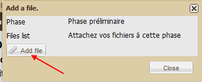
Haga clic en el botón « Añadir un archivo » en la parte baja, a la izquierda. Una vez hecho esto, se abrirá la ventana de selección de archivos de su ordenador:

Seleccione el archivo adecuado y haga clic en el botón « Abrir ».
Entonces, aparecerá una ventana que le ofrece la posibilidad de configurar dicho documento en estado de espera:

Haga clic en « Sí » para aceptar o « No » para anular.
Si hace clic en « Sí », se abrirá otra ventana para crear una condición en espera.

Al final, su documento adjunto aparecerá en la tabla de « Informes y Documentos » con las siguientes informaciones:
- Fecha de la última modificación
- Autor de la modificación
- Título
- Tipo
Fase en la que se inserta el documento

Abrir un documento
Para abrir un documento, sólo hay que hacer clic en el título.
5. ¿Cómo hacer para…?
El objetivo de esta parte del manual es el de reunir la información sobre todas las preguntas que habitualmente surgen durante la utilización de Sigmah.
5.1. ¿Cómo crear un proyecto?
Sigmah permite crear un nuevo proyecto de dos formas diferentes. La elección entre ambas dependerá, sobre todo, de la relación que guarda el nuevo proyecto con los otros, pero también de la forma en que cada uno trabaja.
5.1.1. ¿Cómo crear un proyecto en el Panel de control?
La primera forma de crear un proyecto se encuentra en el Panel de control. Para ello, haga clic en la sección « Menú » que se encuentra en la parte izquierda inferior de la página.

Una vez hecho esto, se abrirá una ventana:

Una vez completados los diferentes campos, haga clic en Crear. Entonces aparecerá un mensaje de confirmación en la parte baja de la pantalla.
5.1.2. ¿Cómo crear un proyecto en una página de Proyecto?
En las páginas de Proyectos se puede crear un nuevo proyecto utilizando
la sección « Proyectos relacionados », situada en la parte baja de la
pantalla. Dicha sección se divide en dos columnas: « Fuentes de
financiación » y « Proyectos financiados ».
En ambos casos, habrá que hacer clic en el botón « Crear », a la derecha del nombre de la columna:
Caso n° 1:
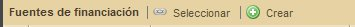
O caso n° 2:

Una vez hecho esto, se abrirá una ventana:
Caso n° 1:

Caso n° 2:

Una vez completados los diferentes campos, haga clic en "Crear" y
aparecerá un mensaje de confirmación en la parte baja de la pantalla.
5.2. ¿Cómo cambiar de fase?
Para completar cada fase, es necesario proceder a:
- su apertura, haciendo clic en el botón « Activar esta fase » (atención: en caso de que una fase anterior esté abierta, todos los campos obligatorios deben ser debidamente completados y guardados antes de poder activar la siguiente fase).
- su clausura, haciendo clic en el botón « Cerrar esta fase » (atención: antes de cerrar una fase hay que completar y guardar todos los campos obligatorios).
Para más detalles sobre el cambio de fase, véase « Panel de fases ».
5.3. ¿Cómo hacer una enmienda de proyecto?
N.B.: El comportamiento aquí descrito es el comportamiento previsto del sistema de enmiendas de proyectos una vez a punto. En el momento de redactar este manual, dicho comportamiento aún no ha sido desarrollado, pero lo será en breve. La descripción del nuevo comportamiento se encuentra en la entrada 0000167: Revise Amendments system behavior. El comportamiento del programa en la actualidad no es muy diferente del comportamiento final descrito a continuación.
Hacer una enmienda permite crear una nueva versión del proyecto. En Sigmah, este proceso se lleva a cabo con varias acciones para cada versión:
- Bloquear o Desbloquear una versión
- Validar o Rechazar una versión
- Crear una nueva versión
5.3.1. Bloquear – Desbloquear una versión
Las versiones pueden ser bloqueadas / desbloqueadas. La ventaja de este
sistema de bloqueo es que permite a todos los usuarios que trabajan
sobre un mismo proyecto ponerse de acuerdo respecto al estado final de
una versión antes de someterla a validación.
Cuando una versión ha terminado de ser modificada y está lista para la
validación, basta con hacer clic en el vínculo « Bloquear la versión »
para bloquearla:

La sección de gestión de enmiendas presentará entonces la siguiente apariencia:

Para desbloquear una versión bloqueada, sólo hace falta hacer clic en el vínculo « Desbloquear la versión » y ésta vuelve a su estado inicial.
5.3.2. Aceptar o rechazar una versión
Una vez bloqueada una versión, se la puede validar o rechazar. Atención: una vez validada o rechazada una versión, ya no podrá ser modificada.
Para validar una versión, sólo hay que hacer clic en el vínculo «
Validar la versión ». La sección de gestión de enmiendas presentará
entonces la siguiente apariencia:

Para rechazar una versión, hay que hacer clic en el vínculo « Rechazar la versión ». La sección de gestión de enmiendas presentará entonces la siguiente apariencia:
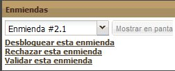

5.4. ¿Cómo copiar y pegar un marco lógico?
Para evitar tener que escribir de nuevo la totalidad de un marco lógico
parecido a una versión precedente, Sigmah permite copiar la totalidad
de un marco lógico y pegarlo en un marco lógico creado recientemente.
Para ello, vaya a la página Marco lógico del proyecto que usted desea
copiar y haga clic con el botón derecho de la segunda línea de la
sección Marco lógico, en el botón « Copiar »:

Al hacer esto, aparecerá una ventana a la derecha de la parte baja de la pantalla que confirma que el cuadro lógico ha sido guardado en el portapapeles:
En segundo lugar, vaya a la página Marco lógico del proyecto que usted quiera completar a partir del marco lógico anterior y haga clic en el botón « Pegar »:
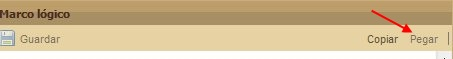
Una vez hecho esto, aparecerá una ventana que pedirá :
- la confirmación de la operación de inserción de las informaciones del marco lógico copiado,
- que elija si quiere vincular o no los indicadores copiados en el original del marco lógico fuente: si la respuesta es afirmativa, los indicadores del marco lógico fuente serán seleccionados como fuente de datos para los indicadores creados en el marco lógico final (para más detalles, véase la definición del concepto de « Fuente de datos » de un indicador).
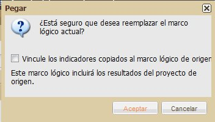
Si usted hace clic en Sí, aparecerá un mensaje de confirmación en la parte baja de la pantalla, a la derecha.
5.5. ¿Cómo adjuntar un documento?
Para más detalles sobre este proceso, véase « Informes y documentos ».
5.6. ¿Cómo adjuntar una nueva versión de un documento?
Para más detalles sobre este proceso, véase « Informes y documentos ».
5.7. ¿Cómo crear un « indicador »?
La creación de indicadores se realiza en la pestaña « Gestión de indicadores » de un proyecto, haciendo clic en el botón « Nuevo indicador ».
Una vez hecho esto, se abre la ventana de creación de indicadores:
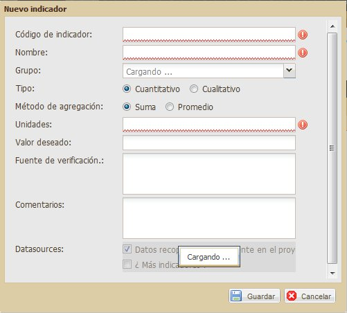
Por cualquier tipo de indicador (cuantitativo o calitativo), los diferentes campos que hay que rellenar tienen las siguientes funciones:
- Código del indicador [obligatorio]: un código para identificar de forma rápida el indicador (ejemplos: I3.5, nfi, no.pozos)
- Nombre [obligatorio]: el nombre completo del indicador (ejemplos: Número de kits NFI distribuidos, Percepción global de la calidad de la acción por parte de sus beneficiarios)
- Tipo: Cuantitativo o Cualitativo (ver la definición del indicador)
- Comentarios: un espacio para informaciones complementarias sobre el indicador
Si el indicador es de tipo « Cuantitativo », se abrirán los siguientes campos:
-
Método de agregación [obligatorio]:
- Suma, si los valores obtenidos en los diferentes lugares y en diferentes momentos deben ser sumados con el fin de ofrecer un valor global del indicador
- Promedio, si el valor del indicador debe ser calculado haciendo la media de todos los valores obtenidos en los diferentes lugares y momentos
- Unidades [obligatorio]: un texto corto que define la unidad de medida de la variable (ejemplos: « kits », « pozos »)
- Valor objetivo: el valor que se pretende alcanzar al final del proyecto
Si el indicador es de tipo « Cualitativo », los siguientes campos también son propuestos:
- Valores posibles [obligatorio]: cada línea de la lista corresponde a uno de los valores propuestos durante la recogida de valores del indicador para cada uno de los lugares y momentos en los que se obtienen los valores del indicador.

5.8. ¿Cómo crear una localización de recopilación de datos referientes a un indicador?
5.9. ¿Qué hacer... si tengo un problema?
En función de la gravedad del problema, usted tiene tres soluciones posibles:
1. En primer lugar, si una información que usted acaba de introducir o guardar en el sistema no aparece, compruebe que ha actualizado el navegador Internet (tecla F5).
2. Si el problema no se resuelve, usted puede informarnos a los responsables del desarrollo de Sigmah, haciendo clic en el vínculo « Informar de una disfunción », que se encuentra a la derecha de la barra superior de todas las páginas abiertas con el programa.

3. Por último, usted puede consultar los foros « Technical support » y « Feedbacks & suggestions » en el sitio web www.sigmah.org
6. Administración
La zona de administración es un espacio reservado a los usuarios con derechos que le permiten configurar los parámetros del programa. Se puede acceder a este espacio con un simple clic en el botón « Administración », que se encuentra en la parte baja izquierda del Panel de control, en la sección Menú.

La zona de administración permite crear y modificar los siguientes elementos:
- las cuentas de usuarios, sus perfiles y derechos
- las zonas de intervención
- los modelos de proyectos
- los modelos de zonas de intervención
- los modelos de informes
- los modelos de categorías
Para más información sobre el concepto de modelo, véase el apartado « El concepto de modelo ».
6.1. Conceptos para el administrador
6.1.1. « Usuario », « perfil » y « grupo de confidencialidad »
Usuario
El usuario es una persona autorizada a utilizar el programa Sigmah de
acuerdo con un uso institucional. Esto significa que el equipo de
proyecto al que pertenece (o el responsable Sigmah, dependiendo del tipo
de organización de la institución en cuestión) le ha otorgado ciertos
derechos a estos efectos. Dichos derechos se definen durante la
configuración de los parámetros, que el usuario concernido no siempre
puede modificar (ver Perfiles, a continuación)
En la tabla Usuarios de la pestaña Usuarios de la pantalla de
Administración, cada usuario es definido por medio de 9 informaciones:
1. Apellido
2. Nombre
3. Estado: una cuenta de usuario puede estar
a. « activa » (lo que quiere decir que la cuenta ha sido creada y que puede ser utilizada por el usuario correspondiente)
b. o « bloqueada » (lo que quiere decir que la cuenta de usuario ha sido creada pero no puede ser utilizada)
4. E-mail
5. Idioma de invitación: inglés o francés
6. Zona de intervención: zona de intervención de la que depende el usuario
7. Último cambio de contraseña
8. Perfiles: véase a continuación
Perfil
El perfil es el conjunto de derechos asociados a un usuario en función
de los tipos de autorización que posee y grupos de confidencialidad
(véase a continuación) a los que pertenece.
Estos tipos de autorización (llamados « Permisos globales ») son 9 y se
encuentran en la tabla Perfiles de la pestaña Usuarios de la pantalla
Administración:
- Leer los proyectos: permite consultar el contenido de los proyectos relacionados con las zonas de intervención a las que el usuario tiene acceso
- Modificar los proyectos: permite modificar el contenido de los proyectos relacionados con las zonas de intervención a las que el usuario tiene acceso en modo escritura
- Crear proyectos: permite crear proyectos
- Cambiar de fase: permite cerrar una fase de un proyecto y activar la siguiente fase
- Acceder a la administración: permite acceder a todas las pantallas del espacio de administración (creación y modificación de modelos, gestión de los usuarios y zonas de intervención)
- Gestión de usuarios: permite crear y modificar informaciones relativas a los usuarios
- Gestión de zonas de intervención: permite modificar las informaciones relativas a las zonas de intervención que se encuentran fuera de la administración
- Suprimir archivos: permite suprimir del servidor un archivo añadido como archivo adjunto por un usuario (para suprimir los archivos disponibles en las pestañas « Informes y documentos »)
- Ver ActivityInfo: acceso a las pantallas de la aplicación heredadas directamente del programa ActivityInfo.
Grupo de confidencialidad
Un grupo de confidencialidad es un conjunto de campos que comparten la
misma confidencialidad. Un grupo « Seguridad » podría reunir todos los
campos que tratan sobre la información relativa a la seguridad, por
ejemplo, o un grupo « RH » podría contener todas las informaciones de
evaluación y seguimiento de los recursos humanos, etc.
Cuando se asocia un campo a un grupo de confidencialidad, dicho campo es invisible para todos los usuarios.
Pero esos mismos grupos de confidencialidad pueden ser asociados a su
vez a ciertos usuarios por medio de un vínculo entre aquéllos y ciertos
perfiles, lo que permite acceder a los campos incluidos en dichos grupos
de confidencialidad. El vínculo entre un perfil y un grupo de
confidencialidad se caracteriza por un nivel de permiso:
- Ver: permite a los usuarios que poseen el perfil en cuestión ver, pero no modificar, el contenido del grupo de confidencialidad asociado;
- Modificar: permite a los usuarios que poseen el perfil en cuestión ver y modificar el contenido del grupo de confidencialidad asociado.
Si un usuario posee varios perfiles, se le aplicarán los permisos más amplios para cada grupo de confidencialidad.
6.1.2. Campo de un modelo de proyecto
Todo campo de un modelo de proyecto se compone de las 10 características siguientes:
- Nombre: título con el que el campo aparecerá para los usuarios finales
- Tipo: formato según el cual habrá que rellenar dicho campo (a elegir entre los ofrecidos por una lista). Para más detalles, véase « Definiciones de los tipos asociados a un campo de modelo de proyecto ».
- Contenedor: espacio que contiene un conjunto de grupos. De forma concreta, se trata, para un proyecto, de la pestaña « Detalles » o, para una de las fases del modelo de proyecto, de la sección « Detalles de la fase ». De la misma forma, para un modelo de zona de intervención, el contenedor es siempre la pestaña « Informaciones ».
- Grupo: conjunto compuesto de varios campos.
- Obligatorio: indica si el campo tiene que ser rellenado obligatoriamente por el usuario del proyecto o si puede que dar sin respuesta.
- Grupos de confidencialidad: permite dar acceso o no al campo a ciertos grupos de usuarios. Para más detalles, véase « ¿Cómo modificar un grupo de confidencialidad? ».
- Enmendable: permite definir si la modificación del campo será controlada o no por el sistema de « Enmiendas ». (Para más detalles, véase « ¿Cómo realizar una enmienda de proyecto? »).
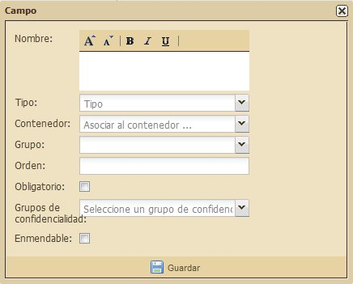
6.1.2.1. Los tipos de campo de modelo
En el caso de los modelos de proyecto y de zona de intervención, un tipo es el formato con el que se guarda la información introducida en el campo que se está creando (Para más detalles, véase « ¿Cómo editar un modelo de proyecto que acaba de ser creado? »). Dicho formato se elige de entre una lista que aparece cuando se hace clic en el botón con una flecha que se encuentra a la derecha de la línea.
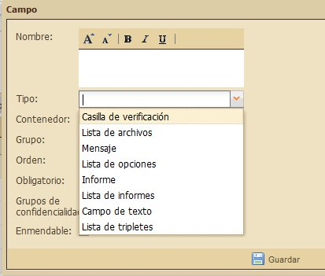
Estos diferentes tipos de campo se definen de la siguiente manera:
- Casilla: si, por ejemplo, para un modelo de proyecto, un campo « Casilla » tiene como título « Acuerdo del Consejo de Administración para comenzar la acción », el usuario encontrará en el proyecto en cuestión una casilla, con el texto « Acuerdo del Consejo de Administración para comenzar la acción » a su derecha.
- Lista de archivos: el nombre del campo corresponde a un tipo de archivo previsto para el proyecto o la zona de intervención. « Fotos del proyecto » o « Informe de diagnóstico » son dos ejemplos de nombre para campos de Lista de archivos.
- Mensaje: una información que se mostrará tal cual en la pantalla. Este campo no admite que el usuario introduzca ninguna información.
- Lista de elección: una lista de elección puede admitir una sola o varias elecciones simultáneas.
- Informe: un informe único (véase « El concepto de Informe »)
- Lista de informes: un grupo de varios informes (véase « El concepto de Informe »)
- Campo de texto: un campo que permite escribir texto, ya sea una línea, un párrafo, una fecha o un número.
Por otra parte, ciertos tipos implican informaciones complementarias que hay que completar en la misma ventana.
Informaciones complementarias para los campos « Lista de archivos »
« Límite superior » corresponde al máximo número de archivos que se autorizan como en la lista.

Informaciones complementarias para los campos « Lista de elección »
Para crear un campo « Lista de elección » hay que dar tres tipos de información complementaria diferentes:
- ¿Elección múltiple?: si marcamos esta casilla, quiere decir que se pueden elegir varios valores de la lista. Si no la marcamos, sólo puede elegirse un valor.
- Categoría relacionada: Indica si los valores que hay que elegir para la lista de elección tienen que formar parte o no de una Categoría (Para más detalles, véase « El concepto de Categoría »)
- Opciones personalizadas: los valores elegidos para formar parte de esta lista de elección

Para crear una opción personalizada, escriba su nombre en el campo de texto y haga clic en Añadir:

Una vez hecho esto, la nueva opción personalizada aparecerá debajo del campo de texto.
Para suprimir una elección, haga clic en la cruz de la izquierda.
Informaciones complementarias para los campos « Informe » y « Lista de informes »
Para los campos « Informe » o « Lista de informes », sólo hay una información complementaria que hay que completar:
- Nombre del modelo de informe: el modelo de informe indica que el formato que tiene que respetar el informe en cuestión (ejemplo: « formulario único »).
Para más detalles, véase « El concepto de Informe » y « Gestión de los modelos de informe ».
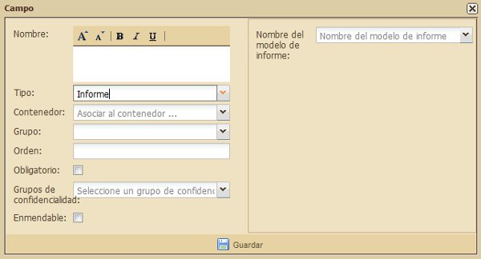

Informaciones complementarias para los campos « Campo de texto »
- Tipo de campo de texto: un campo de texto puede ser de 4 tipos diferentes, disponibles en la lista desplegable:
- Párrafo: un espacio de varias líneas para escribir un texto sin formato de presentación
- Línea de texto: una sola línea de texto
- Número: un número (entero o con decimales, utilizando una coma en este último caso)
- Fecha
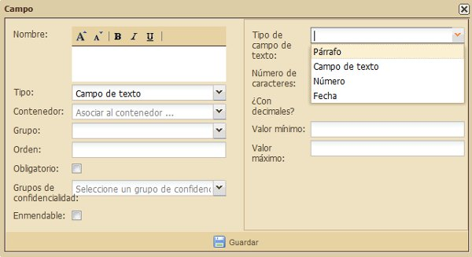
- Número de caracteres: si el campo es de tipo « Párrafo » o « Línea de texto », indique el número máximo de caracteres autorizado para el texto.
- ¿Decimales?: si se trata de un campo de tipo « Número », la casilla marcada significa que el número debe ser un número con decimales y la casilla sin marcar, que el número debe ser un número entero.
- Límite inferior y límite superior: si se trata de un campo de tipo « Número » o « Fecha », se especifican aquí los valores mínimo y máximo admitidos en el campo.
6.2. Gestión de usuarios y permisos
La página Gestión de usuarios se compone de 3 secciones:
- Usuarios: para crear y modificar cuentas de usuario
- Perfiles: para crear y modificar perfiles
- Gestión de los grupos de confidencialidad: para crear y modificar grupos de confidencialidad
Para más información sobre estas tres nociones, véase « Usuario », « perfil » y « grupo de confidencialidad ».
La sección « Usuarios » ofrece la posibilidad de realizar 4 acciones:
- Botón Nuevo usuario: para crear un usuario
- Botón Desactivar/activar: para bloquear o desbloquear una cuenta de usuario
- Botón Buscar un usuario: para acceder directamente a la cuenta de un usuario (criterio de búsqueda = nombre).
- Botón Modificar: para modificar un perfil de usuario
La sección « Perfiles » ofrece la posibilidad de realizar 2 acciones:
- Botón Nuevo perfil: para crear un perfil de usuario
- Botón Modificar: para modifiacar un perfil de usuario
La sección « Gestión de los grupos de confidencialidad » ofrece la posibilidad de realizar 2 acciones:
- Botón Nuevo: para crear un grupo de confidencialidad
- Botón Modificar: para modificar un grupo de confidencialidad
N.B.: El contenido de las secciones Usuarios y Perfiles puede ser
actualizado a medida que se realizan las modificaciones con un simple
clic en el botón Actualizar situado a la derecha de la barra de
herramientas de cada una de ellas.
6.2.1. ¿Cómo crear un usuario?
La sección Usuarios permite crear usuarios (uno cada vez). Para ello,
haga clic en el botón « Nuevo Usuario » situado bajo el título de la
sección.

Una vez hecho esto, se abrirá una ventana titulada « Nuevo usuario »:
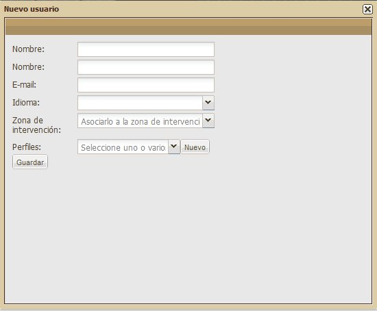
Rellene los campos de la ventana:
- Apellidos:
- Nombre:
- E-mail:
- Idioma de invitación: a elegir entre el inglés y el francés
- Zona de intervención: a elegir entre todas las zonas de intervención existentes
- Perfiles: a elegir entre todos los perfiles existentes
6.2.2. ¿Cómo desactivar (y/o activar) una cuenta de usuario?
La sección Usuarios permite desactivar (y/o activar) una cuenta de
usuario (una cada vez). Para ello, haga clic en el botón «
Desactivar/Activar » que se encuentra bajo el título de la sección a la
derecha del botón « Nuevo usuario ».
Si la tabla contiene varios usuarios, seleccione con un simple clic la
línea del usuario que usted desea modificar y haga clic en «
Desactivar/Activar » :
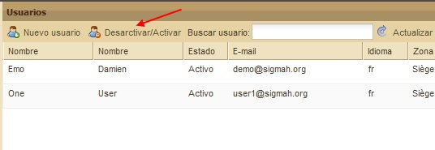
Si en la tabla la columna de estado indica « Activo », al hacer esto el estado cambiará a Bloqueado:
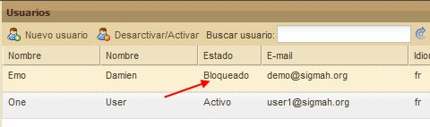
Para volver a activar la cuenta de usuario, haga una vez más clic en « Desactivar/Activar ».
6.2.3. ¿Cómo buscar un usuario?
La sección Usuarios ofrece la posibilidad de buscar un usuario a partir de su nombre. Para ello, rellene la casilla situada a la derecha del título « Buscar usuario ».
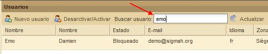
6.2.4. ¿Cómo modificar una cuenta de usuario?
La sección Usuarios ofrece la posibilidad de modificar una cuenta de
usuario. Para ello, haga clic en el botón « Modificar » que se encuentra
en la última columna de la línea correspondiente a la cuenta de usuario
que quiera modificar.

Una vez hecho esto, aparecerá una ventana en la que se encuentran la información relativa al usuario en cuestión:
Realice las modificaciones pertinentes y haga clic en guardar. A continuación, aparecerá un mensaje de confirmación en la parte inferior derecha de la pantalla.
6.2.5. ¿Cómo crear un perfil?
La sección Perfil ofrece la posibilidad de crear un nuevo perfil de usuario. Para ello, haga clic en el botón « Nuevo perfil », que se encuentra bajo el título de la sección.
Una vez hecho esto, se abrirá una ventana para darle un nombre al perfil y seleccionar sus tipos de permisos y grupos de confidencialidad:

Haga clic en Guardar, abajo a la izquierda, para grabar los datos del perfil. Una vez hecho esto, aparecerá un mensaje de confirmación en la parte inferior derecha de la pantalla.
6.2.6. ¿Cómo modificar un perfil?
Para modificar un perfil de usuario, haga clic en el botón « Modificar » que se encuentra en la última columna y en la línea correspondiente al usuario en cuestión.

Una vez hecho esto, aparecerá una ventana en la que se puede modificar la información relativa al usuario elegido:

Una vez grabadas las modificaciones, aparecerá un mensaje de confirmación en la parte inferior derecha de la pantalla.
6.2.7. ¿Cómo crear un grupo de confidencialidad?
Para crear un grupo de confidencialidad, haga clic en el botón « Nuevo » que se encuentra bajo el título de la sección.
Una vez hecho esto, aparecerá una ventana con casillas para rellenar:

Cuando haya rellenado los diferentes campos, haga clic en el botón « Guardar », que se encuentra abajo a la izquierda. Una vez hecho esto, aparecerá un mensaje de confirmación en la parte inferior derecha de la pantalla.
6.2.8. ¿Cómo modificar un grupo de confidencialidad?
Para modificar un grupo de confidencialidad, haga clic en el botón « Modificar » que se encuentra en la última columna y en la línea del grupo que quiera modificar.
Una vez hacho esto, se abrirá una ventana con casillas para rellenar:

Cuando haya terminado las modificaciones, haga clic en el botón «
Guardar », abajo a la izquierda, y aparecerá un mensaje de confirmación
en la parte inferior derecha de la pantalla.
Aparecerá una nueva ventana para actualizar la columna Grupos de confidencialidad de la sección Perfiles, en la que aperecen los elementos que acaban de ser modificados:

Haga clic en « sí ».
6.3. Gestión de las zonas de intervención
Con una única sección, la página « Gestión de las zonas de intervención » ofrece la posibilidad de crear zonas de intervención – a partir de los modelos de zona de intervención – además de modificar o eliminar las zonas de intervención creadas. (Para más detalles sobre los modelos de zona de intervención, véase « La "Zona de intervención" »).

El panel de las zonas de intervención contiene 5 botones, situados bajo el título:
- « Mostrar todo »
- « Ocultar todo »
N. B.: Para más información sobre los botones « Mostrar todo » y « Ocultar todo », véase el apartado « Mostrar/ocultar todas las zonas de intervención » en « Panel de las zonas de intervención » (Para navegar más fácilmente entre las diferentes carpetas, véase, en el mismo capítulo, el apartado « Abrir/cerrar una carpeta que contiene sub-carpetas ».)
- « Nuevo »
- « Mover »
- « Eliminar »
Además, contiene 4 columnas:
- Casilla de verificación: para seleccionar la línea y, eventualemente, las sub-zonas que constituyen la zona de intervención. La primera casilla de verificación, situada en la barra de los títulos de columnas sirve para seleccionar todas las zonas y sub-zonas de la tabla.
- Código:
- Título:
- País:
Crear una zona de intervención
Para añadir una nueva zona de intervención, seleccione la línea
correspondiente a la zona dentro de la cual quiere crear la nueva zona y
haga clic en el botón « Nuevo ».

Una vez hecho esto, aparece la siguiente ventana:

Rellene todos los campos y haga clic en el botón « Crear ».

Con esta operación, se creará la nueva zona, que aparecerá en la tabla, actualizada automáticamente.

Desplazar una zona de intervención
Para desplazar una zona de intervención, seleccione la línea
correspondiente a la zona en cuestión y haga clic en el botón « Mover ».
Una vez hecho esto, aparece la siguiente ventana:
Seleccione en la lista desplegable el nuevo lugar que quiere asignar
a la zona de intervención y haga clic en el botón « Mover ».

Con esta operación, se desplazará la nueva zona, que aparecerá en la tabla, actualizada automáticamente.
Éliminar una zona de intervención
Para eliminar una zona de intervención, seleccione la línea de la zona en cuestión y haga clic en el botón « Eliminar ».
Una vez hecho esto, aparece la siguiente ventana:

Para confirmar la supresión de la zona haga clic en Sí; para anular la supresión haga clic en No. Si usted elige confirmar la supresión, la tabla se actualizará automáticamente.
6.4. Gestión de los modelos de proyecto
Compuesta de un único bloque, la página Gestión de los modelos ofrece la posibilidad de crear y modificar modelos de proyectos.
Para más detalles sobre el concepto de modelo, véase « El "Modelo" »
Para más detalles sobre el concepto de proyecto, véase « El "Proyecto" »
6.4.1. ¿Cómo crear un modelo de proyecto?
Para crear un modelo de proyecto, haga clic en el botón « Nuevo » que se encuentra bajo la pestaña Administración.

Una vez hecho esto, se abrirá la siguiente ventana:

De un nombre al modelo de proyecto y escoja uno de los tres tipos de proyecto disponibles (proyecto propio, proyecto de financiamiento, proyecto de contraparte local) haciendo clic en el botón que se encuentra entre los iconos de cada tipo de proyecto y su título. Haga clic en « Guardar ». Una vez hecho esto, aparecerá un mensaje de confirmación.
Su modelo de proyecto se añade a la lista de los modelos existentes, en la que aparecerá en último lugar.
6.4.2. ¿Cómo editar un modelo de proyecto que acaba de ser creado?
Cuando que haya creado el modelo de proyecto, tendrá que editarlo, es decir, darle unas características específicas. Para ello, haga clic en el nombre, subrayado, del modelo de proyecto que quiera editar. Si éste acaba de ser creado, aparece por defecto en Estado « Borrador » (por oposición a « Utilizado ») en la lista de los modelos existentes.
Al hacer esto, la página de administración cambia de pantalla sin abrir una nueva pestaña:

Esta página de edición se compone de dos partes:
- En la parte superior, una recapitulación de la información ya suministrada (nombre del modelo de proyecto, estado y tipo de proyecto) + un botón « Guardar »
- En la parte inferior, la tabla de edición en sí, compuesta de 3 pestañas (Campos, Fases, Marco lógico). Al abrir dicha tabla, aparece, por defecto, la primera pestaña (Campos).
6.4.2.1. Parte superior:
Esta parte permite modificar 3 informaciones del modelo:
1. El nombre del modelo
2. El estado del modelo:
- Borrador: el modelo permanecerá oculto para los usuarios finales y sólo se podrán crear proyectos de prueba a partir del modelo
- Disponible: los usuarios finales podrán ver el modelo
- Indisponible: tras haber sido utilizado, el modelo está de nuevo oculto para los usuarios finales
3. Modifiel tipo de proyecto (proyecto propio, proyecto de financiamiento, proyecto de contraparte local)
Después de haber modificado alguna de estas informaciones, hay que hacer clic en el botón « Guardar » para conservar las modificaciones.
6.4.2.2. Parte inferior:
Esta parte se compone de las 3 pestañas siguientes:
- Campos: permite fijar la información que se pedirá en las pestañas « Detalles » o en « Detalles de la fase » del o de los proyectos que creados a partir del modelo en cuestión.
- Fases: permite establecer el número, nombre y organización de las fases que habrá que rellenar en el Panel de gestión
- Marco lógico: permite establecer las características del marco lógico que se presentará en la pestaña Marco lógico
6.4.2.2.1. La pestaña Campos:
El contenido de la pestaña Campos se compone de una barra de herramientas y una tabla:
- La barra de herramientas contiene 3 botones:
- Añadir,
- Añadir un grupo,
- Eliminar
- La tabla se compone de 10 columnas, cada una de las cuales representa un característica para cada campo:
- Nombre,
- Tipo,
- Obligatorio,
- Grupos de confidencialidad,
- Enmendable,
- Banner,
- Posición en el banner,
- Contenedor,
- Grupo
Los campos por defecto
Cuando se crea un nuevo modelo de proyecto, esta tabla se encuentra
completada con 9 campos por defecto (cada uno en una línea de la tabla),
a saber:
- Código,
- Nombre,
- Presupuesto,
- Fecha de inicio,
- Fecha de fin,
- País,
- Autor,
- Responsable,
- Zona de intervención
De las 10 características (en las columnas) de la tabla de edición, la
segunda (« Tipo ») viene ya rellena con la información « Elemento por
defecto ». Esta configuración, que no puede ser modificada, significa
que dicho campo se encontrará presente, con el título que le corresponde
(Código, Nombre, País, etc.), en todos los proyectos cualquiera que sea
el modelo o tipo de proyecto utilizado (propio, de financiamiento, de
contraparte local).
Por el contrario, las 3 últimas columnas (Contenedor, Id de Grupo,
Grupo) también poseen ciertas informaciones por defecto, pero pueden ser
modificadas.
¿Cómo editar los campos por defecto de un modelo de proyecto?
Para configurar cada campo propuesto por defecto, haga clic en su nombre y se abrirá una ventana, diferente para cada campo.
Véase un ejemplo para el campo Código:

Para cada ventana, cuando termine de rellenar la información que se pide, haga clic en el botón « Guardar » que se encuentra abajo en el centro. A continuación aparecerá un mensaje de confirmación.
La información sobre el « Grupo », en la última columna de la tabla,
se puede abrir haciendo directamente clic en la columna. Al hacer clic
en el nombre, aparece la siguiente ventana:
Complete todos los campos (Nombre, Contenedor, Posición vertical, Posición horizontal) y haga clic en Guardar. Una vez hecho esto, aparecerá un mensaje de confirmación.
¿Cómo editar un campo dentro de un modelo de proyecto?
Las características que presentamos a continuación corresponden a
cada una de las columnas de la tabla de edición. (Para más detalles
sobre la tabla de edición, véase « ¿Cómo editar un modelo de proyecto que acaba de ser creado? »)
Si usted crea un nuevo campo haciendo clic en el botón « Nuevo », aparecerá la siguiente ventana:

Rellene los siguientes campos:
- Nombre: título del nuevo campo. Escriba el nombre que haya elegido en el campo de texto previsto utilizando (o no) las 5 funciones de formato que aparecen sobre el recuadro (Aumentar el tamaño de letra, reducir el tamaño de letra, negrita, cursiva, subrayar)
- Tipo: formato con el que habrá que escribir la información. Para ello hay que elegir entre las opciones de la lista que se despliega cuando se hace clic en el botón que se encuentra a la derecha de la línea. Véase a continuación la lista de formatos (Casilla de verificarión, Lista de archivos, Mensaje, Pregunta, Informe, Lista de informes, Campo de texto, Lista de triplet):
Para más detalles, véase « Los tipos de campo de modelo ».
- Contenedor: corresponde al lugar en el que se podrá rellenar el campo. El lugar que ocupa el contenedor se puede elegir entre los ofrecidos por una lista que se despliega cuando se hace clic en el botón que se encuentra a la derecha de la línea. Véase a continuación la lista de lugares posibles para el contenedor (Detalles, fase de inicio por defecto/Default root phase):

- Grupo: se trata del lugar en el que se podrá rellenar el campo en cuestión. Hay que elegir el grupo entre los disponibles para el contenedor elegido.
- Obligatorio: indica si el campo tiene que ser completado de forma obligatoria por el usuario del proyecto o si se puede dejar en blanco. Para que el campo sea obligatorio, haga clic en la casilla correspondiente.
- Grupos de confidencialidad: permite dar acceso o no al campo en cuestión a ciertos grupos de usuarios. (Para más detalles, véase « ¿Cómo crear un grupo de confidencialidad? »). El grupo de confidencialidad asociado a un nuevo campo tiene que ser elegido en una lista que se despliega cuando se hace clic en el botón que se encuentra a la derecha de la línea:
- Enmendable: permite definir si el campo puede ser modificado o no durante una modificación especial del proyecto, llamada « Enmienda ». (Para más detalles, véase « ¿Cómo hacer una enmienda de proyecto? »). Para que el campo se enmendable, haga clic en la casilla correspondiente para marcarla.

N.B.: Guardar las informaciones introducidas en el sistema
Una vez haga terminado de introducir toda la información necesaria, no
olvide de hacer clic en Guardar. Un mensaje le confirmará que la
grabación ha sido realizada con éxito.
Por otra parte, si usted no ha completado todos los campos del
formulario, aparecerá un mensaje de error como en el siguiente ejemplo:

Para más detalles sobre las 10 características de un campo, véase « Campo de un modelo de proyecto » y « Los tipos de campo de modelo ».
¿Cómo crear un grupo de campos en un modelo de proyecto?
Haga clic en el botón « Nuevo grupo » que se encuentra bajo la pestaña « Campos », a la derecha del botón « Nuevo ». Una vez hecho esto, se abrirá la siguiente ventana:
Rellene los siguientes campos:
• Nombre: el título con el que los usuarios finales podrán ver el grupo.
• Contenedor: emplazamiento en el que se encontrará el grupo
• Posición vertical: indica la posición vertical del
grupo en el contenedor, permitiendo así elegir el orden de aparición de
los grupos.
6.4.2.2.2. La pestaña Fases
La pestaña Fases contiene, por defecto:
- un botón « Nuevo »
- una tabla compuesta por 4 columnas:
- Orden,
- Nombre de la fase,
- Fases siguientes
- Guía de la fase
¿Cómo modificar una fase en un modelo de proyecto?
La cuarta casilla de cada línea posee un botón « Modificar » que se
puede activar para actualizar la fase correspondiente. Al hacer clic en
dicho botón, aparece la siguiente ventana:
Rellene los siguientes campos:
- Nombre de la fase: título de la fase, tal y como aparecerá en el panel de gestión de los usuarios finales.
- Fases siguientes: en caso de que hayan varias fases disponibles, este campo permite definir qué fases seguirán directamente a la fase en curso de modificación. (No hay que indicar para todas las fases si siguen directamente o no a esta fase, sino sólo la o las fases que la siguen directamente. Generalmente no hay más que una fase siguiente).
- ¿Fase inicial?: Marque la casilla si usted quiere que la fase en cuestión sea la fase que se abrirá en el momento de crear el proyecto.
- Orden de aparición: orden de aparición de las pestañas de fase en el panel de gestión.
- Guía de la fase: se trata de una dirección web (un URL) a la que el usuario será dirigido cuando haga clic en « Guía de la fase » para la fase en cuestión

¿Cómo crear una nueva fase en un modelo de proyecto?
Haga clic en el botón « Nuevo » que se encuentra bajo la pestaña Fases. Una vez hecho esto, aparecerá la siguiente ventana:

Para más detalles sobre los campos que hay que completar, véase « ¿Cómo modificar una fase en un modelo de proyecto? ».
6.4.2.2.3. La pestaña Marco lógico
En la pestaña Marco lógico podemos ver:
- un botón « Guardar »,
- un campo « Nombre del marco lógico »
- un menú desplegable que se compone de 4 rúbricas:
- Objetivos específicos,
- Actividades,
- Resultados esperados,
- Requisitos
Cada una de dichas rúbricas se compone a su vez de varios campos.
Para acceder a las 3 últimas rúbricas, hay que utilizar el ascensor previsto para ello a la derecha del menú:

N. B.: Cada una de las informaciones completadas en esta página
permanecerá visible para el usuario final en la pestaña Marco lógico de
todos los proyectos que utilicen el modelo y tipo correspondientes.
¿Cómo editar el modelo de marco lógico de un modelo de proyecto?
En primer lugar, se puede modificar el nombre del marco lógico
ofrecido por defecto « Default log frame ». Para ello, bórrelo
escribiendo el nombre de su elección en el lugar destinado a tal efecto.
Una vez hecho esto, aparecerá el siguiente mensaje de confirmación:
De la misma forma, en cada uno de los campos de las 4 rúbricas encontrará una respuesta propuesta en función del estándar más extendido del marco lógico (esto es, una tabla compuesta por 4 columnas – que aquí no pueden ser modificadas – y de un número máximo de líneas y grupos – limitado, por defecto, a 3 por cada rúbrica, salvo las excepciones indicadas a continuación).
He aquí una lista de los elementos que pueden modificarse en cada rúbrica:
1. Objetivos específicos (OE):
- Número máximo de OE:
- ¿Utilizar grupos de OE?
- ¿Número máximo de grupos de OE?
- Número máximo de A por grupo:
2. Actividades (A):
- Número máximo de A:
- Número máximo de grupos de A:
- Número máximo de A por RE:
- ¿Utilizar grupos de A? (pregunta de tipo verdadero o falso, con verdadero por defecto)
- Número máximo de A por grupo:
3. Resultados Esperados (RE):
- Número máximo de RE:
- Número máximo de grupos de RE:
- Número máximo de RE por OE:
- ¿Utilizar grupos de RE? (pregunta de tipo verdadero o falso, con verdadero por defecto)
- Número máximo de RE por grupo:
4. Premisas (P):
- Número máximo de P:
- Número máximo de grupos de P:
- Número máximo de P por grupo:
- ¿Utilizar grupos de P? (pregunta de tipo verdadero o falso, con verdadero por defecto)
6.4.3. ¿Como importar un modelo de proyecto?
Haga clic en "Importar" situado a la derecha del modelo que usted desea importar. En tal caso, aparecerá la siguiente ventana. Haga clic en "Browse" :
Una vez hecho esto, se abrirá la ventana de selección de archivos de su ordenador. Elija un archivo (.dat) y haga clic en "Abrir" :

El archivo adecuado aparecerá en la precedente ventana. Elija un tipo de modelo de proyecto en la lista y haga clic en "Ok".

El modelo de proyecto esta importado y aparecerá en la actualizada lista.
6.4.4. ¿Como suprimir un modelo de proyecto ?
Haga clic en "Suprimir" situado a la derecha del modelo que usted desea suprimir. En tal caso, aparecerá la siguiente ventana.
Haga clic en "Ok". El modelo de proyecto está suprimido y la lista se actualiza automáticamente .
6.4.5. ¿Como exportar un modelo de proyecto?
Haga clic en "Exportar" situado a la derecha del modelo que usted desea exportar. En tal caso, aparecerá la siguiente ventana. Haga clic en "Ok".

Una vez hecho esto, se abrirá la ventana de selección de archivos de su ordenador:

Haga clic en "Enregistrer".
6.4.6. ¿Como duplicar un modelo de proyecto?
Haga clic en "Duplicar" a la derecha del modelo de proyecto que usted desea duplicar.
En tal caso, aparece un mensaje de confirmación a la derecha de la parte baja de la pantalla. El modelo duplicado aparece abajo de la lista de los modelos de proyecto que se actualiza automáticamente.
6.5. Gestión de los modelos de zona de intervención
Con una única sección, la página de Gestión de los modelos de
intervención ofrece la posibilidad de crear y modificar modelos de zonas
de intervención.
Para más detalles sobre el concepto de modelo, véase « El "Modelo" »
Para más detalles sobre el concepto de zona de intervención, véase « La "Zona de intervención" »
6.5.1. ¿Cómo crear un modelo de zona de intervención?
Para crear un modelo de zona de intervención, haga clic en el botón « Nuevo » que se encuentra bajo la pestaña Administración.
Una vez hecho esto, aparecerá la siguiente ventana:

Rellene los siguientes campos:
- Nombre del modelo: dar un nombre al modelo con el que aparecerá en la página de gestión de modelos de zonas de intervención. Este nombre no será en ningún caso visible para el usuario final.
Ejemplo: « Modelo de Misión v2 »
- Tipo de zona: nombre genérico que la organización quiere dar a todas las zonas creadas a partir del modelo.
Ejemplo: si el tipo de zona para un modelo es « Misión », y una zona creada a partir de este modelo tiene el nombre « Haití », el usuario verá en su pantalla « Misión Haití ».
- ¿Cuenta con un presupuesto?: indica si las zonas creada a partir del modelo pueden tener o no un presupuesto.
- ¿Contiene proyectos?: indica si se puede asociar proyectos a las zonas creadas a partir del modelo o no.
Para terminar, haga clic en el botón « Guardar » que se encuentra abajo a la izquierda y aparecerá un mensaje de confirmación.
6.6. Gestión de modelos de informe
La página Gestión de modelos de informe se compone de una sección
compuesta por dos partes. La parte de la izquierda presenta la lista de
los modelos de informe clasificado por nombre y la de la derecha el
detalle del informe seleccionado en la parte de la izquierda (con un
simple clic en la línea del modelo de informe que le interese).
Para más detalles sobre el concepto de modelo, véase « El "Modelo" »
Para más detalles sobre el concepto de informe, véase « El "Informe" »
6.6.1. ¿Cómo crear un nuevo modelo de informe?
Para crear un modelo de informe, escriba su nombre en la casilla vacía situada encima de la columna « Nombre del modelo de informe » y haga clic en el botón « Añadir ». Una vez hecho esto, aparecerá un mensaje de confirmación. El nuevo modelo aparece automaticamente en la lista.

6.6.2. ¿Cómo crear una nueva sección de informe?
Para crear una nueva sección de informe, haga clic en el botón « Nuevo » que se encuentra en la parte superior derecha de la sección.

Una vez hecho esto, aparecerá una línea suplementaria en la columna de
la izquierda, llamada « Nombre de la sección »: « Para editar, haga clic
en la casilla ».
Haga clic en dicho campo para darle otro nombre:
Haga clic en la cifra 0 que se encuentra en la columna precedente « Orden » para elegir el lugar en el que aparecerá esta nueva sección en relación a las demás. Escriba el número elegido y apriete la tecla Enter del teclado. En ese mismo momento, se grabará su elección.

A continuación, haga clic en la cifra 0 que aparecere en la columna «
Número de zonas de texto », para elegir el número de párrafos asociados
a esta nueva sección. Escriba el número elegido y apriete la tecla
Enter del teclado. En ese mismo momento, se grabará su elección.

Para subordinar la nueva sección y hacerla aparecer dentro de una
sección ya existente, haga clic en « Id de la sección matriz » y
aparecerá una casilla con una lista desplegable.

Haga clic en la flecha que apunta hacia abajo para desplegar la lista:

Seleccione la sección en la que quiere que aparezca la nueva sección y
apriete la tecla Enter del teclado. En ese mismo momento, se grabará su
elección.

6.7. Gestión de las categorías
La página « Gestión de las categorías » se compone de una tabla con dos columnas:
- A la izquierda: el nombre de las categorías
- A la derecha: las etiquetas asociadas a cada una de las categorías
Esta página permite 5 acciones :
- Crear, suprimir y importar des categorías
- Crear y suprimir des etiquetas
(Para más detalles sobre las categorías y sus etiquetas, véase « Una "Categoría" ».
Crear una categoría
Para crear una nueva categoría :
- elija una forma entre los 6 iconos propuestos en la lista (Círculo, Cruz, Rombo, Cadrado, Estrella, Triángulo)
- escriba el nombre de ésta en la casilla vacía situada a la derecha de la lista de las formas
- haga clic en el botón « Añadir »

Una vez hecho esto, aparecerá un mensaje de confirmación. La nueva categoría se añade a la lista de los modelos existentes, en la que aparecerá en último lugar.
Suprimir una categoría
Para suprimir una categoría :
- elija una categoría haciendo clic en su nombre
- haga clic en el botón « Eliminar »
Una vez hecho esto, aparecerá un mensaje de confirmación. La lista de las categorías se actualiza automaticamente.
Exportar una categoría
Para exportar una categoría, haga clic en el botón « Exportar » :

Una vez hecho esto, aparecerá una ventana :

Haga clic en "Ok".
Importar una categoría
Para importar una categoría, haga clic en el botón « Importar » :

Una vez hecho esto, aparecerá una ventana. Haga clic en el botón « Browse » :
Una vez hecho esto, se abrirá la ventana de selección de archivos de su ordenador. Seleccione el archivo adecuado y haga clic en el botón « Abrir ».

El archivo adecuado aparecerá en la precedente ventana.

Una vez hecho esto, aparecerá un mensaje de confirmación. La lista de las categorias se actualiza automaticamente.
Crear etiquetas de categoría
Para crear etiquetas dentro de la nueva categoría :
- escribir su nombre en la casilla vacía de la parte derecha de la tabla, justo encima de la columna titulada « Color »,
- seleccionar un color en la lista desplegable que presenta los códigos cromáticos y, por último,
- hacer clic en el botón « Añadir ».

Una vez hecho esto, aparecerá un mensaje de confirmación. La lista de las etiquetas se actualiza automaticamente.
Suprimir etiquetas de categoría
Para suprimir etiquetas dentro de la nueva categoría :
- seleccionar la etiqueta que usted desea suprimir,
- hacer clic en el botón « Eliminar ».

Una vez hecho esto, aparecerá un mensaje de confirmación. La lista de las etiquetas se actualiza automaticamente.